Dòng dữ liệu: đếm, mômen và cửa sổ Năm phác thảo (sketch) thay lời giải chính xác bằng ước lượng có cận sai số và bộ nhớ nhỏ.
Bài 09 · Giải thuật nền tảng của Khoa học dữ liệu
Học kỳ 1 · Năm học 2026–2027
Trường Đại học Công nghệ · Đại học Quốc gia Hà Nội
Bài 08 xây ba cấu trúc trên dòng: mẫu theo khóa, hồ chứa và Bloom filter. Yêu cầu đếm số người dùng phân biệt trong tháng được để ngỏ, vì cả ba cấu trúc đều không trả lời được. Bài này đặt năm câu hỏi trên cùng một dòng (số phần tử phân biệt, độ lệch của phân bố, tần suất từng phần tử, số sự kiện trong cửa sổ gần đây, phần tử phổ biến gần đây) và xây cho mỗi câu hỏi một phác thảo (sketch) kèm bảo đảm sai số, xác suất thất bại và bộ nhớ. Ba loại bảo đảm xuất hiện: theo xác suất chọn hàm băm, theo kỳ vọng và tất định.
Nguồn: MMDS ấn bản 3, Chương 4, §§4.4–4.7; UMass CS514, bài 10; sách và trang chiếu của các tác giả MMDS tại http://www.mmds.org.
Tiên quyết và quy ước Nhắc lại: thuật toán dòng đọc mỗi phần tử một lần, trả lời từ trạng thái.
Nhắc lại: hồ chứa $s$ ô giữ mỗi phần tử đã đọc với xác suất $s/r$; Bloom filter không âm giả.
Nhắc lại: cận hợp; tuyến tính kỳ vọng; $1-z\le e^{-z}$.
Ký hiệu: dòng $x_1,x_2,\ldots$ trên tập vũ trụ $\mathcal U$; đã đọc $r$ phần tử, vị trí đánh số từ 1.
Dòng đầu là Định nghĩa 08.1: phép cập nhật biến trạng thái cũ và phần tử mới thành trạng thái mới, phép trả lời chỉ đọc trạng thái, kho lưu trữ không được đọc lại. Hồ chứa (Định lý 08.17) là cơ chế giữ vị trí của biến AMS trên dòng chưa biết độ dài. Bloom filter (Định lý 08.25) là điểm so sánh của Flajolet–Martin và Count-Min: cả ba băm từng phần tử, nhưng giữ những thứ khác nhau. Cận hợp phát biểu $\Pr(E_1\cup\cdots\cup E_n)\le\sum_i\Pr(E_i)$, không cần độc lập; tuyến tính kỳ vọng cũng không cần độc lập. Bất đẳng thức $1-z\le e^{-z}$ dùng cho phía dưới của ngưỡng hai phía. Tổng cấp số nhân và bất đẳng thức Markov được nhắc lại tại chỗ dùng. Vị trí trên dòng đánh số từ 1; $\mathcal U$ là tập mọi phần tử có thể đến.
Mục tiêu học tập Định nghĩa $f_u$, $F_p$, $y_k$, $D_r$; chọn phác thảo theo phạm vi, bảo đảm, chi phí. Chạy Flajolet–Martin; chứng minh ngưỡng hai phía, mẹo trung vị; giải thích thứ tự gộp. Chạy Alon–Matias–Szegedy (AMS); chứng minh $\mathbb E[X]=F_2$, dạng $F_p$, không chệch với hồ chứa. Chạy Count-Min; chứng minh bảo đảm (Markov, hàng độc lập); chọn $m$, $t$. Chạy Datar–Gionis–Indyk–Motwani (DGIM); chứng minh cận dưới $N$ bit, bộ nhớ $O(\log^2N)$, cận 50%, gộp dây chuyền đúng. Chạy cửa sổ suy giảm, tìm phần tử phổ biến; chứng minh ít hơn $1/(c\theta)$ điểm. Mục tiêu 1 được kiểm bằng ví dụ năm câu hỏi và câu trả lời cho năm yêu cầu của một trang web. Mục tiêu 2 đến 6 được kiểm bằng ví dụ chạy tay, trang chứng minh và câu hỏi cuối cụm của từng phác thảo; phần bài tập vận dụng kiểm mục tiêu 1 (Bài 4.5.1), 2 (Bài 4.4.1), 3 (Bài 4.5.3), 4 (BHK Bài 6.7) và 5 (Bài 4.6.1, 4.6.3). Ký hiệu $y_k$ là số bit 1 trong $k$ vị trí cuối, $D_r$ là tổng suy giảm, $X$ là biến AMS, $m$ và $t$ là số ô mỗi hàng và số hàng của Count-Min, $N$ là độ dài cửa sổ. Phạm vi là toàn dòng hay cửa sổ; "thứ tự gộp" là trung bình trong nhóm rồi trung vị; "gộp dây chuyền đúng" là tính đúng của phép gộp dây chuyền trong DGIM.
Nội dung Mở đầu Đếm phần tử phân biệt bằng Flajolet–Martin Mômen bậc hai và ước lượng AMS Ước lượng tần suất bằng Count-Min Sketch Cửa sổ trượt và cửa sổ suy giảm mũ Tổng kết và tự kiểm tra Bài tập vận dụng Đọc trước: Mining of Massive Datasets (MMDS), ấn bản 3, Chương 4, §§4.4–4.7, tr.142–159.
Flajolet–Martin ước lượng số phần tử phân biệt từ độ dài đuôi băm lớn nhất và gộp nhiều hàm băm bằng trung bình trong nhóm rồi trung vị. Biến AMS ước lượng mômen bậc hai với kỳ vọng đúng, vì số phân biệt không phân biệt được hai dòng lệch khác nhau. Count-Min ước lượng tần suất từng phần tử, vì mômen bậc hai không chỉ ra phần tử nặng. Ba đại lượng đó tính trên toàn dòng; mạch cửa sổ đếm bit 1 trong $N$ vị trí cuối bằng DGIM rồi thay biên cứng của cửa sổ bằng trọng số giảm theo tuổi. Tổng kết đối chiếu giả thiết, bảo đảm và chi phí; bài tập vận dụng gồm năm bài MMDS.
Vấn đề trung tâm Nhu cầu: năm câu hỏi trên dòng lượt truy cập (lượt nhấp), hàng tỷ phần tử mỗi ngày.
Bộ nhớ không được tỷ lệ với số phần tử phân biệt hay độ dài cửa sổ.
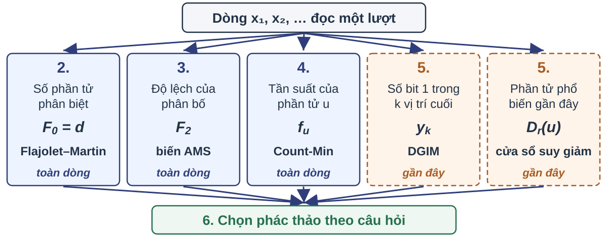
Theo MMDS §4.1.2, tr.133, dòng lượt nhấp của các trang Yahoo! có hàng tỷ phần tử mỗi ngày. Ở trang không đăng nhập, người dùng được nhận diện theo địa chỉ IP (MMDS Ví dụ 4.5, tr.142), và mỗi trang là một dòng riêng. Năm câu hỏi chia hai nhóm theo phạm vi thời gian: ba câu đầu hỏi về toàn dòng, hai câu sau hỏi về phần gần đây. Mỗi câu hỏi được đặt thành một đại lượng có định nghĩa; lời giải chính xác của cả năm đại lượng cần bộ nhớ tỷ lệ với số phần tử phân biệt $d$ hoặc với độ dài cửa sổ $N$.
Vấn đề trung tâm, câu trả lời có điều kiện Hàm băm như ngẫu nhiên: Flajolet–Martin cho cỡ của số phần tử phân biệt. Vị trí chọn đều: biến AMS đo đúng độ lệch theo kỳ vọng. Count-Min không ước lượng thấp; họ phổ dụng, hàng độc lập: thừa quá $\varepsilon r/\kappa$ với xác suất $\le\delta$. Nhóm bit 1 theo lũy thừa của 2: DGIM sai không quá 50% số bit 1 gần đây. Chỉ giữ phần tử có điểm $\ge\theta$: cửa sổ suy giảm giữ ít hơn $1/(c\theta)$ điểm. Mỗi dòng là một kết quả có điều kiện. Dòng một: với $R$ là độ dài đuôi lớn nhất, $2^R$ nằm trong $(d/\lambda,\lambda d)$ với xác suất ít nhất $1-1/\lambda-e^{-\lambda/2}$; nhiều hàm băm được gộp bằng trung vị. Dòng hai: vị trí $I$ đều trên mọi vị trí đã đọc cho $\mathbb E[r(2v_I-1)]=F_2$. Dòng ba: tính không ước lượng thấp là tất định, chỉ cần mỗi phần tử cộng 1 vào tần suất; hàng độc lập và họ băm phổ dụng cho cận thừa quá $\varepsilon r/\kappa$ với xác suất không quá $\delta$. Dòng bốn: $O(\log^2N)$ bit, đúng với mọi dòng bit. Dòng năm: ít hơn $1/(c\theta)$ điểm. Với năm yêu cầu của một trang web, các câu trả lời này cho 368 byte so với 512 MiB, $74\,000$ bộ đếm, 266 byte so với 125 MB.
Ví dụ: năm câu hỏi trên dòng mười lăm phần tử Dòng $\mathrm a,\mathrm b,\mathrm c,\mathrm b,\mathrm d,\mathrm a,\mathrm c,\mathrm d,\mathrm a,\mathrm b,\mathrm d,\mathrm c,\mathrm a,\mathrm a,\mathrm b$; tính bốn câu trả lời đầu.
Phần tử Vị trí Số lần $\mathrm a$ 1, 6, 9, 13, 14 5 $\mathrm b$ 2, 4, 10, 15 4 $\mathrm c$ 3, 7, 12 3 $\mathrm d$ 5, 8, 11 3
Câu 1–2: phân biệt 4; số lần $\mathrm a$: 5. Câu 3: $5^2+4^2+3^2+3^2=59$. Câu 4: $\mathrm a$ trong 8 vị trí cuối: 3 lần. Câu 5: cần trọng số theo tuổi. Dòng lấy từ MMDS Ví dụ 4.7, tr.146; kiểm tra lại: $5+4+3+3=15$. Câu 3 là tổng bình phương số lần xuất hiện. Câu 4 đếm $\mathrm a$ ở các vị trí 9, 13, 14 trong đoạn từ vị trí 8 đến 15, nên cần biết vị trí chứ không chỉ số lần. Câu 5 cần một cách cân thời gian: với cửa sổ suy giảm và hằng số $c=1/2$, $\mathrm b$ đứng đầu dù $\mathrm a$ xuất hiện nhiều hơn. Ba câu đầu tóm tắt cùng một bảng tần suất thành một số: đếm số hàng, đọc một hàng, cộng bình phương các hàng.
Tần suất, mômen và cửa sổ trượt Định nghĩa. Tần suất (frequency) của $u\in\mathcal U$ là $f_u=\lvert\{i\le r:x_i=u\}\rvert$; mômen bậc $p$ là $F_p=\sum_{u\in\mathcal U}f_u^{\,p}$, với $0^0=0$.
$F_0=d$ là số phần tử phân biệt, $F_1=r$ là độ dài dòng; $F_2$ còn gọi là số bất ngờ (surprise number).
Định nghĩa. Cửa sổ trượt (sliding window) độ dài $N$ là $N$ phần tử cuối $x_{r-N+1},\ldots,x_r$.
Ví dụ. Dòng mười lăm phần tử có $F_0=4$, $f_{\mathrm a}=5$, $F_2=59$; câu 4 là tần suất của $\mathrm a$ trên cửa sổ $N=8$.
Định nghĩa 09.1 và 09.2 của ghi chú. Thuật ngữ tiếng Anh của mômen bậc $p$ là moment of order $p$. Quy ước $0^0=0$ khiến phần tử chưa xuất hiện không góp vào $F_0$, nên $F_0$ đếm đúng các phần tử đã gặp (MMDS §4.5.1, tr.145). Hai nhầm lẫn thường gặp: coi $F_0$ là độ dài dòng, trong khi độ dài là $F_1$; và coi $F_2$ là $F_1^2$, trong khi trên dòng này $F_1^2=225$ còn $F_2=59$. Câu hỏi: tính $F_1$ và $F_3$ của dòng mười lăm phần tử. Lời giải: $F_1=15$, $F_3=125+64+27+27=243$. Khi $r<N$, cửa sổ là cả dòng; mỗi phần tử mới làm cửa sổ dịch sang phải một vị trí, nên tần suất trên cửa sổ đổi theo $r$ ngay cả khi phần tử mới không phải $\mathrm a$.
Chi phí: lời giải chính xác Mô hình: bộ nhớ, đơn vị ở cột cuối.
Câu hỏi Đại lượng Lời giải chính xác Bộ nhớ số phần tử phân biệt $F_0=d$ bảng băm phần tử đã gặp $d$ phần tử tần suất $f_u$ bộ đếm mỗi phần tử $d$ bộ đếm độ lệch $F_2$ như trên, cộng bình phương $d$ bộ đếm bit 1 trong $k$ vị trí cuối $y_k$ $N$ bit cuối $N$ bit phổ biến gần đây $D_r(u)$ với mọi $u$ điểm mỗi phần tử $d$ số
Véc-tơ bit IPv4: $2^{32}$ bit $=512$ MiB mỗi trang; $N=10^9$: 125 MB mỗi URL.
Bảng là Nhận xét 09.3; nguồn của từng hàng: MMDS §4.4.1, tr.142 (tập đã gặp), §4.5.1, tr.146 (bộ đếm), §4.6, tr.150 ($N$ bit cuối). Với $\lvert\mathcal U\rvert=2^{32}\approx4{,}3\cdot10^9$ địa chỉ IPv4, véc-tơ bit (bit vector) đánh dấu mọi địa chỉ đã gặp cần $2^{32}$ bit, tức $2^{29}$ byte. Cửa sổ $10^9$ lượt lấy từ trang chiếu Stanford CS246 2017, Streams 1, tr.13: giữ $N$ bit cho một URL tốn $10^9/8$ byte. Cả năm hàng đều tỷ lệ với $d$ hoặc $N$; riêng tổng suy giảm $D_r$ của một dòng số chỉ cần một số. Bài 08 đếm bộ nhớ bằng từ máy; với Flajolet–Martin và DGIM bài này đếm theo bit, vì đếm bằng từ máy che mất thừa số $\log N$ khi so $O(\log^2N)$ bit với $N$ bit.
2. Đếm phần tử phân biệt bằng Flajolet–MartinMuốn đếm phần tử phân biệt bằng vài bit cho mỗi hàm băm, phải đọc cỡ của tập từ đuôi băm dài nhất.
Độ dài đuôi · Ngưỡng hai phía · Phân phối đuôi nặng · Mẹo trung vị
Mạch mở đầu đặt $F_0=d$ và cho thấy véc-tơ bit chính xác cần 512 MiB cho một trang. Mạch này xây ước lượng $2^R$ từ độ dài đuôi băm lớn nhất, chứng minh cận xác suất hai phía cho một hàm băm, giải thích vì sao trung bình và trung vị thuần đều hỏng, rồi gộp nhiều hàm băm bằng trung bình trong nhóm rồi trung vị. Phép gộp này được dùng lại ở mạch AMS; giới hạn giao cho mạch sau là $F_0$ không phân biệt được hai dòng lệch khác nhau.
Người dùng phân biệt của một trang Nhắc lại: mẫu theo khóa, hồ chứa, Bloom filter không đếm được người dùng phân biệt.
Nhu cầu: đếm số người dùng phân biệt của mỗi trang, nhận diện theo địa chỉ IP.
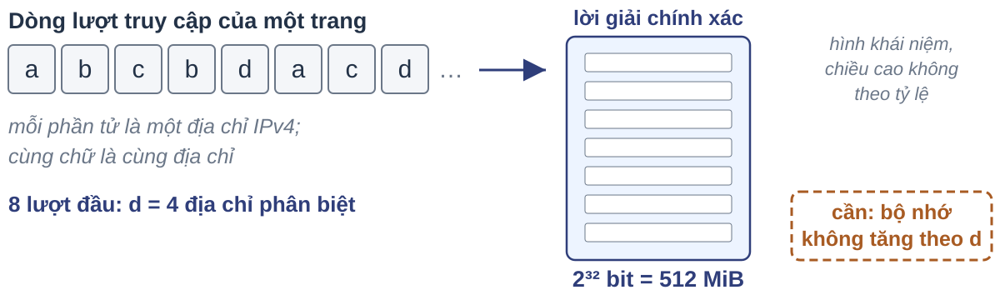
Mọi thuật toán tất định trả đúng $d$ cần ít nhất $\lvert\mathcal U\rvert$ bit trên một số dòng.
Ví dụ 08.17 của Bài 08 để ngỏ yêu cầu đếm người dùng phân biệt trong tháng. Ở trang không đăng nhập, người dùng được nhận diện theo địa chỉ IP (MMDS Ví dụ 4.5, tr.142); mỗi trang là một dòng, và cấu trúc chính xác cho mọi dòng không vừa bộ nhớ chính (§4.4.1, tr.142–143). Nhận xét 09.4 (BHK §6.2.1, tr.183): với ít hơn $\lvert\mathcal U\rvert$ bit, hai tập phần tử khác nhau đã đọc cho cùng trạng thái; nếu hai tập khác cỡ, thuật toán sai ở một trong hai dòng; nếu cùng cỡ, đọc thêm một phần tử thuộc tập này mà không thuộc tập kia làm hai đáp số đúng khác nhau trong khi trạng thái như nhau. Với IPv4, cận này đúng bằng 512 MiB, nên thuật toán phải dùng tính ngẫu nhiên hoặc được phép sai; Flajolet–Martin dùng cả hai.
Ví dụ: đuôi băm của bốn phần tử Chuỗi bit ngẫu nhiên đều kết thúc bằng $\ge\ell$ bit 0 với xác suất $2^{-\ell}$: cần cỡ $2^\ell$ phần tử để có đuôi dài $\ell$.
Tương tự Bloom filter, băm từng phần tử, nhưng chỉ giữ một số: số bit 0 cuối dài nhất.
Phần tử $\mathrm a$ $\mathrm b$ $\mathrm c$ $\mathrm d$ $h_1$ $10110$ $01011$ $11100$ $00111$ số bit 0 ở cuối 1 0 2 0
Tính số lớn nhất khi đọc dòng: 1, 1, 2, rồi giữ 2; ước lượng $2^2=4$.
Ví dụ 09.3; chuỗi bit viết bit cao bên trái nên đuôi là các bit bên phải. Ý tưởng theo MMDS §4.4.2, tr.143: càng nhiều phần tử phân biệt thì càng nhiều giá trị băm khác nhau và càng dễ gặp một giá trị hiếm; tính chất hiếm được chọn là kết thúc bằng nhiều bit 0. Bloom filter ghi một bit cho mỗi giá trị băm; ở đây chỉ giữ chiều dài của đuôi dài nhất. Sau $\mathrm a$ số lớn nhất là 1, sau $\mathrm b$ vẫn 1, sau $\mathrm c$ là 2; $\mathrm d$ có đuôi 0 và các phần tử lặp lại cho đúng độ dài đuôi đã thấy, nên số lớn nhất giữ 2 đến hết dòng. Trên cùng dòng, ba hàm băm khác cho ba ước lượng khác nhau.
Độ dài đuôi và ước lượng Flajolet–Martin Định nghĩa. Với $h:\mathcal U\to\{0,1\}^L$, độ dài đuôi (tail length) $\rho(\mathbf s)$ là số bit 0 liên tiếp ở cuối chuỗi $\mathbf s$; $\rho(0^L)=L$.
$R=\max_{1\le i\le r}\rho(h(x_i))$ là độ dài đuôi lớn nhất; ước lượng Flajolet–Martin của $d$ là $2^R$.
Dòng rỗng có ước lượng 0.
Ví dụ. $\rho(01100)=2$, $\rho(01011)=0$; dòng mười lăm phần tử với $h_1$ có $R=2$.
Định nghĩa 09.5. Độ dài đuôi còn gọi là số bit 0 ở cuối (number of trailing zeros). Chuỗi $01100$ là giá trị băm 12 của trang chiếu MMDS, Streams 2, tr.20. Quy ước $\rho(0^L)=L$ cần vì chuỗi băm hữu hạn (MMDS chú thích 3, tr.144). Hàm $\rho$ chỉ nhìn các bit cuối, nên $2^R$ luôn là lũy thừa của 2. Ví dụ đuôi băm của bốn phần tử là trường hợp $L=5$, $R=2$. Ước lượng chỉ giữ một số $R\in\{0,\ldots,L\}$; số này dao động mạnh theo hàm băm: ba hàm băm khác cho 2, 8, 16 trên cùng dòng.
Ví dụ: ba hàm băm khác trên cùng dòng Dòng mười lăm phần tử, $d=4$; tính $R$ và $2^R$ cho ba hàm băm 5 bit khác.
Hàm $\mathrm a$ $\mathrm b$ $\mathrm c$ $\mathrm d$ độ dài đuôi $R$ $2^R$ $h_3$ $11001$ $00110$ $01011$ $10101$ 0, 1, 0, 0 1 2 $h_4$ $00011$ $11000$ $10101$ $01110$ 0, 3, 0, 1 3 8 $h_5$ $10001$ $01010$ $10000$ $01111$ 0, 1, 4, 0 4 16
Diễn giải: cùng $d=4$, ước lượng 2, 8, 16; đuôi dài 4 của $\mathrm c$ dưới $h_5$ có xác suất $1/16$.
Ví dụ 09.4. Với mỗi hàm, $R$ là số lớn nhất trong bốn độ dài đuôi. Kiểm tra lại: $\rho(11000)=3$, $\rho(10000)=4$, $\rho(01110)=1$. Một hàm ước lượng thấp một nửa, hai hàm thừa gấp 2 và gấp 4. Một biến cố có xác suất $1/16$ cho một phần tử đủ đẩy ước lượng lên 16, nên một hàm băm chỉ cho cỡ của $d$. Hai câu hỏi còn lại: $2^R$ lệch khỏi $d$ quá một hệ số cho trước với xác suất bao nhiêu, và nhiều ước lượng nên được gộp thế nào. Cả hai cần một mô hình xác suất cho hàm băm.
Thuật toán: Flajolet–Martin Đầu vào: dòng $x_1,x_2,\ldots$; hàm băm tất định $h:\mathcal U\to\{0,1\}^L$ chọn trước dòng.
Đầu ra: khi có truy vấn, ước lượng $2^R$ của $d$.
FM(x_1, x_2, …; h)
R ← −∞
với mỗi phần tử x đến:
ℓ ← số bit 0 ở cuối h(x) (bằng L nếu h(x) toàn 0)
nếu ℓ > R: R ← ℓ
truy vấn: trả 0 nếu R = −∞, ngược lại trả 2^R
Phép quyết định là so sánh $\ell>R$; còn để ngỏ: $2^R$ gần $d$ đến đâu.
Mỗi phần tử: 1 phép băm, 1 phép đếm bit 0, 1 phép so sánh; bộ nhớ $\lceil\log_2(L+1)\rceil+1$ bit.
Thuật toán 09.6. Giả thiết tính được $h(x)$ và $\rho(h(x))$ trong $O(1)$ phép trên từ máy. Giá trị $R=-\infty$ nghĩa là chưa đọc phần tử nào; một bit cờ đủ đánh dấu trạng thái này. Mọi thông tin về các phần tử đã qua chỉ còn trong $R$. Trường hợp biên: dòng rỗng trả 0; phần tử lặp lại cho cùng $\ell$ nên không đổi $R$. Dừng: mỗi phần tử được xử lý sau số bước không đổi. Phần bộ nhớ không tính chỗ lưu hàm băm. Câu hỏi: chạy thuật toán với $h_4$ trên dòng mười lăm phần tử. Lời giải: $R$ lần lượt là 0, 3, 3, …, ước lượng 8.
Tính đúng: Flajolet–Martin Mệnh đề. Với $h$ tất định, $\mathcal S_r$ là tập phần tử phân biệt sau $r$ phần tử: (a) $R=\max_{u\in\mathcal S_r}\rho(h(u))$.
Khởi tạo $r=0$: $R=-\infty$, max trên tập rỗng. Duy trì $\max(R,\rho(h(x_r)))=\max_{u\in\mathcal S_{r-1}\cup\{x_r\}}\rho(h(u))=\max_{u\in\mathcal S_r}\rho(h(u))$. Kết luận $R$ chỉ phụ thuộc $\mathcal S_r$: phần tử lặp góp một giá trị.
(b) Hai dòng dùng cùng $h$, cho $R'$ và $R''$: dòng ghép có $R=\max(R',R'')$.
Mệnh đề 09.7 và chứng minh bằng quy nạp theo $r$. Bước duy trì dùng lần lượt bước 2 của thuật toán, giả thiết quy nạp, max trên hợp hai tập và $\mathcal S_r=\mathcal S_{r-1}\cup\{x_r\}$. Tính tất định của $h$ được dùng ở kết luận: cùng phần tử luôn cho cùng $\rho(h(u))$. Bỏ tính tất định thì kết luận sai: nếu mỗi lần gọi $h$ trả một chuỗi ngẫu nhiên mới, một phần tử xuất hiện $10^6$ lần có $10^6$ cơ hội cho đuôi dài, và $R$ đo độ dài dòng thay cho $d$. Phần (b) đúng vì tập phân biệt của dòng ghép là $\mathcal S'\cup\mathcal S''$; với hai hàm băm khác nhau, max của $R'$ và $R''$ không phải $R$ của dòng ghép. Mệnh đề cho thấy $R$ là hàm của tập phần tử phân biệt; độ gần của $2^R$ với $d$ cần một mô hình xác suất cho $h$.
Ngưỡng hai phía của ước lượng Giả thiết: mô hình băm lý tưởng: $h$ chọn ngẫu nhiên trước dòng; $h(u_1),\ldots,h(u_d)$ độc lập, đều trên $\{0,1\}^L$.
Định lý. Với $1\le d\le2^L$, $\lambda\ge2$: (a) $\Pr[R\ge\ell]=1-(1-2^{-\ell})^d$ với mọi số nguyên $0\le\ell\le L$;
$$\text{(b)}\ \Pr[2^R\ge\lambda d]\le\frac1\lambda,\qquad \text{(c)}\ \Pr[2^R\le d/\lambda]\le e^{-\lambda/2}.$$
Ý nghĩa: xác suất lệch xuống giảm theo hàm mũ của $\lambda$, xác suất lệch lên chỉ như $1/\lambda$.
Định nghĩa 09.8 và Định lý 09.10. Xác suất lấy theo phép chọn $h$; dòng được coi là cố định. Mô hình này là mô hình phi tiêu của Bloom filter (Bổ đề 08.26), với $2^L$ đích thay cho $n$ ngăn; nó mạnh hơn tính tất định: tất định nói một phần tử luôn cho cùng giá trị, còn mô hình nói các phần tử khác nhau cho các giá trị độc lập. Phần (b) chỉ cần mỗi giá trị băm đều; (a) và (c) cần thêm tính độc lập. Gộp (b) và (c) bằng cận hợp: $\Pr[d/\lambda<2^R<\lambda d]\ge1-1/\lambda-e^{-\lambda/2}$. Định lý không chặn kỳ vọng của $2^R$. Phần (a) cho hai giới hạn (MMDS, tr.143): khi $d\gg2^\ell$, gần như chắc chắn thấy đuôi dài $\ell$; khi $d\ll2^\ell$, xác suất đó không quá $d\,2^{-\ell}$.
Chứng minh: ngưỡng hai phía, phía trên Bổ đề. $h(u)$ đều thì $\Pr[\rho(h(u))\ge\ell]=2^{-\ell}$: có $2^{L-\ell}$ chuỗi với $\ell$ bit cuối bằng 0.
Bước 1: $R<\ell$ khi và chỉ khi mọi $\rho(h(u_i))<\ell$; theo độc lập, $\Pr[R<\ell]=(1-2^{-\ell})^d$, cho (a).
Bước 2: Theo cận hợp, không cần độc lập:
$$\Pr[R\ge\ell]\le\sum_{i=1}^{d}\Pr[\rho(h(u_i))\ge\ell]=d\,2^{-\ell}.$$
Bước 3: Đặt $\ell_1=\lceil\log_2(\lambda d)\rceil$; vì $R$ nguyên, $2^R\ge\lambda d$ khi và chỉ khi $R\ge\ell_1$:
$$\Pr[2^R\ge\lambda d]=\Pr[R\ge\ell_1]\le d\,2^{-\ell_1}\le\frac{d}{\lambda d}=\frac1\lambda.$$
Bổ đề 09.9: biến cố $\rho(h(u))\ge\ell$ xảy ra khi và chỉ khi $\ell$ bit cuối đều bằng 0; $L-\ell$ bit đầu tùy ý, nên có $2^{L-\ell}$ chuỗi trong $2^L$ chuỗi đều nhau. Với $\ell=L$, chuỗi $0^L$ có $\rho=L$ theo quy ước. Theo tính đúng của Flajolet–Martin, $R=\max_i\rho(h(u_i))$ trên $d$ phần tử phân biệt, nên phần tử lặp không thêm biến ngẫu nhiên. Ở Bước 3, nếu $\ell_1>L$ thì biến cố không xảy ra vì $R\le L$; bất đẳng thức cuối dùng $2^{\ell_1}\ge\lambda d$. Bước 2 và 3 chỉ dùng tính đều. Phản ví dụ khi bỏ tính đều: mọi hàm trong họ cho giá trị chẵn, như $h(x)=2x\bmod32$; với $d=1$, $\Pr[2^R\ge2d]=1$, trái với cận $1/2$ khi $\lambda=2$.
Chứng minh: ngưỡng hai phía, phía dưới Bước 4: Nếu $d/\lambda<1$ thì $2^R\ge1>d/\lambda$: xác suất ở (c) bằng 0.
Bước 5: Nếu $d/\lambda\ge1$, đặt $\ell_2=\lfloor\log_2(d/\lambda)\rfloor+1\le\log_2d\le L$; khi đó $d\,2^{-\ell_2}\ge\lambda/2$.
$$\Pr[2^R\le d/\lambda]=\Pr[R<\ell_2]=(1-2^{-\ell_2})^d\le e^{-d\,2^{-\ell_2}}\le e^{-\lambda/2}.$$
Đẳng thức thứ hai dùng Bước 1; bất đẳng thức đầu dùng $1-z\le e^{-z}$, hai vế không âm.
Bước 6: Theo cận hợp trên hai biến cố (b), (c): $\Pr[d/\lambda<2^R<\lambda d]\ge1-1/\lambda-e^{-\lambda/2}$. $\square$
Ở Bước 5, vì $R$ nguyên, $2^R\le d/\lambda$ khi và chỉ khi $R\le\lfloor\log_2(d/\lambda)\rfloor$, tức $R<\ell_2$. Bất đẳng thức $\ell_2\le\log_2d$ dùng $\lambda\ge2$; $\log_2d\le L$ dùng $d\le2^L$, nên (a) áp dụng được cho $\ell_2$. Từ $2^{\ell_2}=2\cdot2^{\lfloor\log_2(d/\lambda)\rfloor}\le2d/\lambda$ suy ra $d\,2^{-\ell_2}\ge\lambda/2$. Bước 1 và Bước 5 dùng tính độc lập. Phản ví dụ khi bỏ độc lập: mọi phần tử nhận cùng một giá trị băm, khi đó $\Pr[R\ge\ell]=2^{-\ell}$ không phụ thuộc $d$; với $d=1\,024$, $\lambda=4$, $\Pr[2^R\le256]\approx0{,}998$, trong khi cận (c) là $e^{-2}\approx0{,}135$. Phản ví dụ khi bỏ $d\le2^L$: $L=5$, $d=128$, $\lambda=2$, luôn có $2^R\le32<64$.
Ví dụ: một nghìn phần tử phân biệt 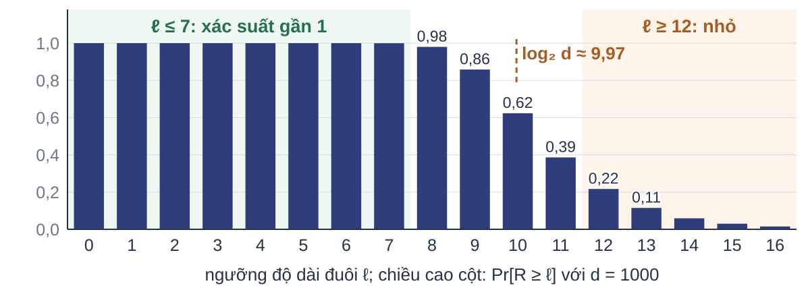
Tính với $d=1\,000$, $\lambda=4$: định lý cho $\Pr[2^R\ge4\,000]\le0{,}25$, $\Pr[2^R\le250]\le0{,}135$; theo (a), $0{,}217$ và $0{,}020$.
Diễn giải: $2^R\in\{256,512,1\,024,2\,048\}$ với xác suất khoảng $0{,}763$.
Ví dụ 09.5; MMDS (tr.143) nêu 64 bit là đủ để băm URL. Giá trị chính xác: $\ell_1=\lceil\log_24\,000\rceil=12$, nên $\Pr[R\ge12]=1-(1-2^{-12})^{1\,000}\approx0{,}217$; $\ell_2=\lfloor\log_2250\rfloor+1=8$, nên $\Pr[R<8]=(1-2^{-8})^{1\,000}\approx0{,}020$; xác suất nằm giữa là $1-0{,}217-0{,}020\approx0{,}763$, còn cận của định lý cho ít nhất $0{,}615$. Hình vẽ công thức (a): cột giảm từ gần 1 xuống gần 0 trong một khoảng hẹp quanh $\log_2d\approx9{,}97$, nên $R$ tập trung quanh $\log_2d$ và $2^R$ cho cỡ của $d$. Khoảng chuyển tiếp rộng chừng bốn giá trị $\ell$, nên một hàm băm chỉ cho cỡ chứ không cho giá trị chính xác; xác suất khoảng $0{,}6$ đến $0{,}76$ là quá thấp, nên cần gộp nhiều hàm băm.
Trung bình và trung vị của các ước lượng Sáu hàm băm trên dòng mười lăm phần tử cho $4,4,2,8,16,4$; trung bình $38/6\approx6{,}33$, trong khi $d=4$.
Tiêu chí Trung bình Trung vị giá trị nhận được mọi số thực dương chỉ lũy thừa của 2 một giá trị rất lớn kéo lệch xa (phân phối đuôi nặng) không ảnh hưởng số liệu $d=1$, $L=64$: $\mathbb E[2^R]=L/2+1=33$ $d=400$: gần nhất 256, 512; sai $\ge112$, tức 28%
Với $d$ cố định, $\mathbb E[2^R]$ tăng không giới hạn theo $L$ (Mệnh đề 09.11).
Mệnh đề 09.11: khi $d=1$, $\mathbb E[2^R]=L/2+1=33$ với $L=64$; với mọi $d$, $\mathbb E[2^R]\ge1+\frac d4(L-\ell_0+1)$ với $\ell_0=\max(1,\lceil\log_2d\rceil)$; với $d=1$, $\ell_0=1$, cận này chỉ cho $1+64/4=17$, còn giá trị đúng là 33. Ý chứng minh: mỗi số hạng của tổng kỳ vọng góp ít nhất $d/4$, vì xác suất có đuôi dài thêm 1 giảm một nửa nhưng $2^R$ tăng gấp đôi (MMDS tr.144, chú thích 3). Do đó trung bình của nhiều $2^{R_j}$ hội tụ về $\mathbb E[2^R]$ chứ không về $d$. Nhận xét 09.12: trung vị của một số lẻ giá trị là một trong các giá trị, nên là lũy thừa của 2; khi $d=400$, hai lũy thừa gần nhất là 256 và 512, nên sai ít nhất $\min(144,112)=112$, tức $112/400=28\%$, dù dùng bao nhiêu hàm băm, miễn số hàm lẻ.
Ví dụ: gộp sáu ước lượng Sáu hàm băm, $d=4$, $g=3$ nhóm cỡ 2; tính trung bình nhóm và trung vị.
Hàm $h_1$ $h_2$ $h_3$ $h_4$ $h_5$ $h_6$ độ dài đuôi 1, 0, 2, 0 0, 2, 0, 1 0, 1, 0, 0 0, 3, 0, 1 0, 1, 4, 0 0, 0, 1, 2 $Y_j=2^{R_j}$ 4 4 2 8 16 4
Nhóm $(4,4)$, $(2,8)$, $(16,4)$ có trung bình $4$, $5$, $10$; trung vị $\widehat d=5$.
Diễn giải: giá trị 16 chỉ làm lệch nhóm thứ ba; kết quả 5 không là lũy thừa của 2.
Ví dụ 09.6. Độ dài đuôi ghi theo thứ tự $\mathrm a,\mathrm b,\mathrm c,\mathrm d$. Hàng $h_1$ là ví dụ đuôi băm của bốn phần tử, ba hàng $h_3$, $h_4$, $h_5$ là ví dụ ba hàm băm; hai hàm mới có giá trị $h_2$: $01101$, $10100$, $00111$, $11010$ và $h_6$: $01001$, $10111$, $11010$, $01100$. Kiểm tra lại: $4+4+2+8+16+4=38$; ba trung bình nhóm sắp tăng là $4,5,10$. Ý tưởng: lấy trung bình trong từng nhóm nhỏ thì một giá trị quá lớn chỉ làm hỏng nhóm chứa nó, và trung vị của các nhóm bỏ qua nhóm đó; thứ tự hai phép theo MMDS tr.144 và trang chiếu Stanford CS246 2017, Streams 2, tr.30. Câu hỏi: gộp theo thứ tự ngược, trung vị trong nhóm rồi trung bình, được bao nhiêu? Lời giải: trung vị hai số là trung bình của chúng, nên ba nhóm vẫn cho 4, 5, 10; bước cuối lấy trung bình được $19/3\approx6{,}33$, bằng trung bình thuần $38/6$. Giá trị 16 lại kéo lệch kết quả, và bước cuối không còn là trung vị nên mất bảo đảm của mẹo trung vị (Nhận xét 09.18).
Thuật toán: gộp trung bình rồi trung vị Đầu vào: dòng; $q$ hàm băm chọn độc lập trước dòng; số nhóm $g$ lẻ, chia hết $q$.
Đầu ra: ước lượng $\widehat d$ của $d$.
GỘP-FM(x_1, x_2, …; h_1, …, h_q; g)
chạy FM song song cho h_1, …, h_q, giữ R_1, …, R_q
truy vấn:
Y_j ← 2^{R_j} với j = 1, …, q
chia Y_1, …, Y_q thành g nhóm liên tiếp, mỗi nhóm q/g giá trị
Ȳ_γ ← trung bình nhóm γ, với γ = 1, …, g
trả trung vị của Ȳ_1, …, Ȳ_g
Trường hợp biên: $g=q$ cho trung vị thuần, $g=1$ cho trung bình thuần.
Phép quyết định là trung vị ở dòng cuối; $O(q)$ phép mỗi phần tử, $O(q+g\log g)$ mỗi truy vấn.
Thuật toán 09.13. Trung bình trong nhóm đủ lớn nhận được gần như mọi giá trị, khắc phục giới hạn của trung vị thuần; trung vị ở bước cuối khắc phục kỳ vọng quá lớn. MMDS (tr.144) khuyên cỡ nhóm $q/g$ ít nhất là một bội nhỏ của $\log_2d$, với $d$ thay bằng một cận trên dự kiến. Số nhóm lẻ để trung vị là một giá trị duy nhất. Dòng rỗng trả 0. Trung vị loại các nhóm bị một giá trị lớn kéo lệch, điều trung bình không làm được. Ví dụ gộp sáu ước lượng là một lượt chạy với $q=6$, $g=3$.
Mẹo trung vị Bổ đề. Mẹo trung vị (median trick): $g$ lẻ; $\bar Y_1,\ldots,\bar Y_g$ độc lập; $G$ là một khoảng; $\Pr[\bar Y_\gamma\notin G]\le\eta$ với mọi $\gamma$. Trung vị $M$ thỏa
$$\Pr[M\notin G]\le(4\eta)^{g/2}.$$
Cận có ích khi $\eta<1/4$; khi đó cận giảm theo hàm mũ của $g$.
Hệ quả. $q=21$ ước lượng độc lập, $\lambda=8$: $\eta\le0{,}144$, $\Pr[M\notin(d/8,8d)]\le0{,}0029$.
Lưu ý: hệ quả là cận của phép gộp khi $g=q$.
Với nhóm lớn hơn, bổ đề cho cận có nội dung khi $\Pr[\bar Y_\gamma\notin G]<1/4$.
Bổ đề 09.14 (mẹo trung vị, median trick) và Hệ quả 09.15. Bổ đề không cần các $\bar Y_\gamma$ cùng phân phối, chỉ cần độc lập và cùng cận $\eta$. Hệ quả áp bổ đề cho chính các ước lượng $Y_j$, tức nhóm cỡ 1: theo ngưỡng hai phía, mỗi $Y_j$ ra ngoài $(d/\lambda,\lambda d)$ với xác suất không quá $\eta=1/\lambda+e^{-\lambda/2}$; với $\lambda=8$, $\eta\le1/8+e^{-4}\approx0{,}1433$, $4\eta\approx0{,}573$, và $0{,}573^{10{,}5}\approx0{,}0029$. Mọi $\lambda\ge6$ đã cho $\eta<1/4$. Hệ quả không khắc phục giới hạn lũy thừa của 2. Cùng nguyên lý còn được chứng minh bằng cận Chernoff (UMass, bài 8, trang chiếu 3–5); chứng minh ở đây dùng một phép đếm.
Chứng minh: mẹo trung vị Bước 1: Đặt $g_0=(g+1)/2$. Nếu $M$ ở bên trái $G$, thì $M$ cùng $g_0-1$ giá trị đứng trước nó đều ở bên trái $G$.
Bên phải đối xứng; $M\notin G$ kéo theo ít nhất $g_0$ biến cố $E_\gamma=\{\bar Y_\gamma\notin G\}$ xảy ra.
Bước 2: Phủ bằng các tập chỉ số $\Gamma$ cỡ $g_0$.
Bước 3–4: Cận hợp, độc lập, rồi rút gọn bằng $\binom g{g_0}\le2^g$:
$$\Pr[M\notin G]\le\sum_{\lvert\Gamma\rvert=g_0}\prod_{\gamma\in\Gamma}\Pr[E_\gamma]\le\binom{g}{g_0}\eta^{g_0}\le2^g\eta^{g/2}=(4\eta)^{g/2}.\ \square$$
Bước 1 dùng tính chất khoảng của $G$: một điểm ngoài khoảng nằm bên trái hoặc bên phải nó. Sắp các giá trị tăng dần, $M$ đứng ở vị trí $g_0$. Bước 2: nếu ít nhất $g_0$ biến cố $E_\gamma$ xảy ra thì mọi biến cố trong một tập $\Gamma$ nào đó có đúng $g_0$ phần tử cùng xảy ra, nên $\{M\notin G\}$ nằm trong hợp các giao. Bước 3 dùng cận hợp, tính độc lập và $\Pr[E_\gamma]\le\eta$; Bước 4 dùng $\binom g{g_0}\le\sum_i\binom gi=2^g$ và $\eta^{g_0}\le\eta^{g/2}$ vì $0\le\eta\le1$, $g_0\ge g/2$. Phản ví dụ khi bỏ độc lập: cả $g$ hàm là cùng một hàm thì mọi $Y_j$ bằng nhau và xác suất không giảm theo $g$. Phản ví dụ khi bỏ tính khoảng: $g=3$, $G=(-\infty,1)\cup(3,\infty)$, $\bar Y_1=0$, $\bar Y_3=4$, $\bar Y_2=2$ với xác suất $\eta$; trung vị bằng 2, nằm ngoài $G$ với xác suất $\eta$, lớn hơn $8\eta^{3/2}$ khi $\eta<1/64$.
Chi phí: Flajolet–Martin Mô hình: bộ nhớ đếm theo bit; phép băm, đếm bit 0, so sánh, cộng tốn $O(1)$; trường hợp xấu nhất.
Bước Số lần Chi phí mỗi lần Đóng góp băm, cập nhật $R_j$ $q$ mỗi phần tử $O(1)$ $O(q)$ tính $Y_j$, trung bình nhóm $q$ mỗi truy vấn $O(1)$ $O(q)$ trung vị của $g$ số 1 mỗi truy vấn $O(g\log g)$ $O(g\log g)$
Trạng thái gồm $q\lceil\log_2(L+1)\rceil+1$ bit, không tính phần lưu $q$ hàm băm.
Giả sử $d\approx10^6$; chọn $L=64$, $g=21$ nhóm cỡ 20: $q=420$, $2\,941$ bit, khoảng 368 byte so với 512 MiB.
Mệnh đề 09.16. Mỗi $R_j\in\{0,\ldots,L\}$ cần $\lceil\log_2(L+1)\rceil$ bit; với $L=64$ là 7 bit. Trạng thái chưa đọc phần tử nào chung cho mọi $j$ nên chỉ cần một bit cờ: $420\cdot7+1=2\,941$ bit. Cỡ nhóm 20 theo lời khuyên của MMDS, vì $\log_2 10^6\approx20$. Bộ nhớ không phụ thuộc độ dài dòng hay $d$, trừ việc chọn $L$ đủ lớn để $d\le2^L$. Nhận xét 09.17: theo MMDS §4.4.4, tr.144–145, giới hạn thực tế là thời gian tính $q$ giá trị băm mỗi phần tử. Mô hình băm lý tưởng là giả thiết phân tích: một hàm ngẫu nhiên đều trên IPv4 với $L=64$ cần 32 GiB để lưu, nên phép so 368 byte với 512 MiB giả thiết các hàm băm có mô tả ngắn. Khi dòng phân tán trên nhiều máy dùng cùng các $h_j$, các phác thảo ghép được bằng max từng $R_j$ (phác thảo hợp nhất được, UMass bài 8).
Bài tập: phần tử lặp và ngưỡng hai phía Câu hỏi: (a) Phần tử $u$ xuất hiện $10^6$ lần. Giải thích vì sao $u$ chỉ góp một giá trị vào $R$.
(b) $d=2\,000$, $L=64$, $\lambda=8$: chặn trên $\Pr[2^R\ge16\,000]$, $\Pr[2^R\le250]$; tính giá trị chính xác bằng $\Pr[R\ge\ell]=1-(1-2^{-\ell})^d$.
Bài tập 09.2; kiểm năng lực dùng bất biến của $R$ và đổi biến cố về ngưỡng độ dài đuôi. Gợi ý: (a) dùng tính đúng của Flajolet–Martin; (b) đổi mỗi biến cố về $R\ge\ell_1$ và $R<\ell_2$ như Bước 3 và Bước 5. Lời giải (a): $h$ tất định nên mọi lần xuất hiện của $u$ cho cùng $\rho(h(u))$, và $R$ là max trên tập phần tử phân biệt, trong đó $u$ có mặt một lần. Lời giải (b): cận của định lý là $1/8=0{,}125$ và $e^{-4}\approx0{,}018$. Chính xác: $\ell_1=14$ vì $2^{13}=8\,192<16\,000\le16\,384$, nên $\Pr[R\ge14]=1-(1-2^{-14})^{2\,000}\approx0{,}115$; $\ell_2=\lfloor\log_2250\rfloor+1=8$, nên $\Pr[R<8]=(1-2^{-8})^{2\,000}\approx0{,}0004$. Kiểm tra: $0{,}115\le0{,}125$, $0{,}0004\le0{,}018$. Hướng dẫn chấm, 10 điểm: (a) nêu tính tất định và bất biến (3 điểm); (b) hai cận (3 điểm), $\ell_1$, $\ell_2$ và hai giá trị chính xác (4 điểm). Nhầm lẫn thường gặp: coi $2^R$ là ước lượng không chệch của $d$, hoặc coi $d$ là độ dài dòng.
3. Mômen bậc hai và ước lượng AMSMuốn đo độ lệch của phân bố mà không giữ bộ đếm cho mọi phần tử, phải ước lượng từ một vị trí ngẫu nhiên.
Số lần xuất hiện ở hậu tố · Không chệch · Mômen bậc cao · Hồ chứa vị trí
Mạch Flajolet–Martin cho ước lượng $F_0$ và phép gộp trung bình trong nhóm rồi trung vị. $F_0$ không đổi khi phân bố lệch đi, nên mạch này ước lượng $F_2$ bằng thuật toán Alon–Matias–Szegedy (AMS, MMDS §4.5.2–4.5.5): mỗi biến giữ một cặp (phần tử, bộ đếm), và trung bình các biến có kỳ vọng đúng bằng $F_2$. Mạch dùng lại hồ chứa của Bài 08 để duy trì vị trí khi độ dài dòng chưa biết. Giới hạn giao cho mạch sau: $F_2$ không chỉ ra phần tử nào chiếm phần lớn dòng.
Độ lệch của phân bố tần suất Nhắc lại: Flajolet–Martin ước lượng $F_0$; phần tử lặp lại không đổi $R$.
Nhu cầu: đo độ lệch của phân bố lượt truy cập theo địa chỉ IP, cùng độ dài và $F_0$.
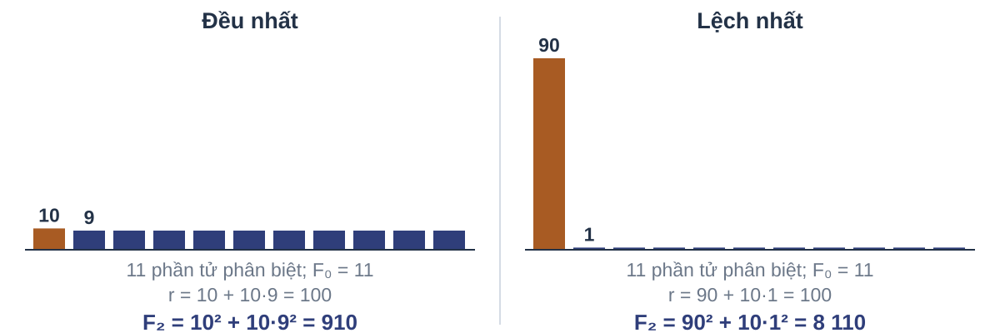
Lời giải chính xác cho $F_2$ giữ $d$ bộ đếm, mỗi phần tử đã gặp một bộ đếm.
Ví dụ 09.2 (MMDS Ví dụ 4.6, tr.145–146). Kiểm tra lại: $10+10\cdot9=100$ và $90+10\cdot1=100$. Với cùng độ dài và cùng số phần tử phân biệt, phân bố càng lệch thì $F_2$ càng lớn: 910 và $8\,110$ là giá trị nhỏ nhất và lớn nhất của $F_2$ khi $r=100$, $d=11$ (Bài tập 09.18). Với $r=15$, $d=4$, hai đầu là 57 và 147, nên $F_2=59$ cho biết dòng mười lăm phần tử gần đều. Flajolet–Martin cho cùng một kết quả trên hai dòng này, vì $R$ chỉ phụ thuộc tập phần tử phân biệt. Lời giải chính xác giữ một bộ đếm cho mỗi phần tử đã gặp rồi cộng bình phương (MMDS §4.5.1, tr.146); khó khăn chính là bộ nhớ tăng theo $d$.
Ví dụ: ba biến trên dòng mười lăm phần tử Chọn vị trí 3, 8, 13; tính bộ đếm $v$, số lần phần tử ở đó xuất hiện từ đó về sau, và $r(2v-1)$.
Trực quan. Như hồ chứa cỡ 1, $u$ được chọn với xác suất $f_u/r$; bộ đếm lớn khi $f_u$ lớn.
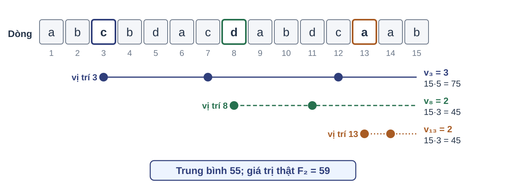
Ví dụ 09.7 (MMDS Ví dụ 4.7–4.8, tr.146–147). Vị trí đều trên mọi vị trí giống hồ chứa cỡ 1 của Bài 08 (Định lý 08.17 với $s=1$), nên phần tử $u$ được chọn với xác suất $f_u/r$. Phần tử xuất hiện nhiều vừa dễ được chọn vừa có bộ đếm lớn, nên một hàm tăng của bộ đếm phản ánh $\sum_uf_u^2$. Mỗi biến ghi phần tử ở vị trí của nó, đặt bộ đếm bằng 1, rồi tăng bộ đếm mỗi khi phần tử đó xuất hiện lại; vị trí 15 mang $\mathrm b$, không biến nào giữ $\mathrm b$. Từ bộ đếm $v$, mỗi biến cho $r(2v-1)$: $15\cdot5=75$, $15\cdot3=45$, $15\cdot3=45$. Bộ đếm không phải tần suất: $\mathrm a$ ở vị trí 1, 6, 9 không được biến thứ ba đếm.
Số lần xuất hiện ở hậu tố và biến AMS Định nghĩa. Với dòng $x_1,\ldots,x_r$, $r$ đã biết, số lần xuất hiện ở hậu tố của $x_i$ là $v_i=\lvert\{i'\ge i:x_{i'}=x_i\}\rvert$.
Biến AMS chọn vị trí $I$ đều trên $\{1,\ldots,r\}$, giữ cặp $(x_I,v_I)$ và cho ước lượng $X=r(2v_I-1)$.
Ví dụ. Vị trí 6 mang $\mathrm a$; $\mathrm a$ ở 6, 9, 13, 14 nên $v_6=4$, dù $f_{\mathrm a}=5$.
Ba biến của ví dụ trên có $I=3,8,13$ và $v_I=3,2,2$.
Định nghĩa 09.19. Số $v_i$ đếm cả chính vị trí $i$, nên $v_i\ge1$; lần xuất hiện cuối của một phần tử có $v_i=1$, lần đầu có $v_i=f_{x_i}$. Ví dụ $v_6=4$ là MMDS Ví dụ 4.9, tr.147. Nhầm lẫn thường gặp: thay $v_I$ bằng tần suất $f_{x_I}$ của cả dòng; khi đó kỳ vọng thành $\sum_uf_u(2f_u-1)=2F_2-F_1$, bằng $118-15=103$ trên dòng mười lăm phần tử thay cho 59. Phép nhân với $r$ cần biết độ dài dòng lúc trả lời; giả thiết $r$ biết trước là giả thiết riêng của thuật toán này. Ký hiệu $v_i$ của bài là $c(i)$ trong MMDS §4.5.
Thuật toán: AMS khi biết độ dài dòng Đầu vào: dòng $x_1,\ldots,x_r$, $r$ biết trước; số biến $s\ge1$.
Đầu ra: $s$ ước lượng $X_1,\ldots,X_s$ của $F_2$ và trung bình của chúng.
AMS-BIẾT-ĐỘ-DÀI(x_1, …, x_r; s)
rút I_1, …, I_s đều trên {1, …, r}
với i = 1, …, r:
với mỗi biến V đã có phần tử: nếu V.phần_tử = x_i: V.đếm ← V.đếm + 1
với mỗi biến V có V.vị_trí = i: V.phần_tử ← x_i; V.đếm ← 1
trả r(2·V.đếm − 1) cho mỗi biến V, và trung bình của chúng
Bất biến: sau $x_1,\ldots,x_i$, biến có vị trí $I\le i$ giữ $x_I$ và số lần $x_I$ trong $x_I,\ldots,x_i$.
Phép quyết định là so sánh với phần tử của từng biến; còn để ngỏ: vì sao dùng $2v-1$.
Mỗi phần tử: $O(s)$ phép so sánh; bộ nhớ: $s$ cặp (phần tử, bộ đếm).
Thuật toán 09.20. Bất biến đúng khi biến được tạo, vì bộ đếm bằng 1, và được giữ vì bộ đếm tăng đúng khi phần tử mới bằng $x_I$; khi $i=r$, bộ đếm bằng $v_I$. Phép quyết định là so sánh phần tử mới với phần tử của từng biến; vị trí được rút trước dòng, nên thuật toán cần biết $r$. Trường hợp biên: hai biến có thể rút trùng vị trí; khi đó chúng giữ cùng phần tử và cùng bộ đếm. Dừng sau $r$ phần tử. Mỗi bộ đếm cần $\lceil\log_2(r+1)\rceil$ bit. Điều còn để ngỏ: vì sao $r(2v_I-1)$ chứ không phải $r\,v_I$ hay $r\,v_I^2$; câu trả lời là tính không chệch.
Biến AMS không chệch Định lý. Dòng $x_1,\ldots,x_r$ cố định; $I$ đều trên $\{1,\ldots,r\}$; bộ đếm của biến bằng đúng $v_I$. Khi đó
$$\mathbb E[X]=\mathbb E\bigl[r(2v_I-1)\bigr]=F_2.$$
Ý nghĩa: $u$ được chọn với xác suất $f_u/r$, khi đó $2v_I-1$ có trung bình $f_u$, nên $u$ góp $r\cdot\frac{f_u}{r}\cdot f_u=f_u^2$.
Lưu ý: định lý chỉ nói về kỳ vọng; một biến của ví dụ cho 75 khi $F_2=59$.
Định lý 09.22; xác suất lấy theo phép chọn $I$, và độ dài $r$ phải biết khi trả lời. So với ngưỡng hai phía của Flajolet–Martin, đây là bảo đảm loại khác: kỳ vọng đúng bằng đại lượng cần ước lượng, không cần giả thiết băm, nhưng không chặn xác suất lệch của một biến. Đổi lại, mỗi biến tốn một bộ đếm cỡ $\lceil\log_2(r+1)\rceil$ bit thay cho một số cỡ $\log_2L$ bit. Chạy nhiều biến với vị trí rút độc lập, trung bình các ước lượng tiến về $F_2$. Câu hỏi: giả thiết nào bị vi phạm nếu chỉ chọn vị trí trong 5 phần tử đầu? Lời giải: $I$ không đều trên $\{1,\ldots,r\}$; kỳ vọng thành 93.
Chứng minh: biến AMS không chệch Bổ đề. $\sum_{v=1}^{f}(2v-1)=f^2$: quy nạp, $f^2+\bigl(2(f+1)-1\bigr)=(f+1)^2$.
Bước 1: $I$ nhận mỗi $i$ với xác suất $1/r$: $\mathbb E[X]=\sum_{i=1}^{r}\frac1r\cdot r(2v_i-1)=\sum_{i=1}^{r}(2v_i-1)$.
Bước 2: Gọi các vị trí của $u$ là $i_1<\cdots<i_{f_u}$; hậu tố từ $i_\nu$ chứa $i_\nu,\ldots,i_{f_u}$, nên $v_{i_\nu}=f_u-\nu+1$.
Nhóm theo phần tử, áp bổ đề cho từng $u$:
$$\mathbb E[X]=\sum_{u\in\mathcal U}\sum_{\nu=1}^{f_u}\bigl(2v_{i_\nu}-1\bigr)=\sum_{u\in\mathcal U}\sum_{v=1}^{f_u}(2v-1)=\sum_{u\in\mathcal U}f_u^2=F_2.\ \square$$
Bổ đề 09.21 là tổng các số lẻ, MMDS Bài tập 4.5.5 (tr.150); cơ sở $f=1$ cho $1=1^2$. Chứng minh định lý theo MMDS §4.5.3, tr.147–148. Bước 1 dùng tính đều của $I$. Bước 2 dùng định nghĩa hậu tố của bộ đếm: khi $\nu$ chạy từ $f_u$ về 1, $v_{i_\nu}$ chạy từ 1 lên $f_u$, nên tổng trên các vị trí của $u$ là tổng $f_u$ số lẻ đầu tiên. Phần tử có $f_u=0$ không có vị trí nào và góp $0$. Phản ví dụ khi bỏ tính đều: $I$ đều trên 5 vị trí đầu, $v_1,\ldots,v_5=5,4,3,3,3$, cho $\frac15\cdot15\cdot(9+7+5+5+5)=93$. Phản ví dụ khi bỏ hậu tố: bộ đếm là $f_{x_I}$ cho $2F_2-F_1=103$.
Ví dụ: bộ đếm hậu tố ở mọi vị trí Tính $v_i$ và $2v_i-1$ trên dòng mười lăm phần tử.
$i$ 1 2 3 4 5 6 7 8 9 10 11 12 13 14 15 $x_i$ $\mathrm a$ $\mathrm b$ $\mathrm c$ $\mathrm b$ $\mathrm d$ $\mathrm a$ $\mathrm c$ $\mathrm d$ $\mathrm a$ $\mathrm b$ $\mathrm d$ $\mathrm c$ $\mathrm a$ $\mathrm a$ $\mathrm b$ $v_i$ 5 4 3 3 3 4 2 2 3 2 1 1 2 1 1 $2v_i-1$ 9 7 5 5 5 7 3 3 5 3 1 1 3 1 1
Tổng là 59: $\mathrm a$ góp $9+7+5+3+1=25$, $\mathrm b$ góp 16, $\mathrm c$ và $\mathrm d$ mỗi phần tử 9.
$\mathbb E[X^2]=15\sum_i(2v_i-1)^2=15\cdot319$, nên $\operatorname{Var}(X)=1\,304$, độ lệch chuẩn $\approx36{,}1$.
Ví dụ 09.8. Trung bình của $X=15(2v_I-1)$ trên 15 vị trí đồng khả năng là $15\cdot59/15=59$, đúng như định lý. Kiểm tra lại: $\sum_iv_i=37$ và $\sum_i(2v_i-1)=2\cdot37-15=59$; $25+16+9+9=59$. Độ lệch chuẩn khoảng 61% của $F_2$. Độ phân tán: $\sum_i(2v_i-1)^2=319$, nên $\mathbb E[X^2]=\frac1{15}\sum_i\bigl(15(2v_i-1)\bigr)^2=15\cdot319=4\,785$ và $\operatorname{Var}(X)=4\,785-3\,481=1\,304$. Trung bình của $s$ biến độc lập có phương sai $1\,304/s$ (Bước 2 trong chứng minh Mệnh đề 05.14), với điều kiện về độc lập ở Nhận xét 09.27: biến của một hồ chứa chung không độc lập. Ví dụ ba biến cho 55 ở một lần rút; kỳ vọng trên mọi lần rút là 59.
Ước lượng mômen bậc cao Hệ quả. Như định lý không chệch, với $p\ge2$ nguyên: $X_p=r\bigl(v_I^{\,p}-(v_I-1)^p\bigr)$ có $\mathbb E[X_p]=F_p$.
Chứng minh. Bước 1–2 không dùng dạng $2v-1$; tổng lồng nhau $\sum_{v=1}^{f}\bigl(v^p-(v-1)^p\bigr)=f^p$.
Với $p=3$: $X_3=r(3v_I^2-3v_I+1)$.
Ví dụ. $F_3=243$; ba biến $v=3,2,2$ cho $285$, $105$, $105$, trung bình 165.
Hệ quả 09.23 (MMDS §4.5.4, tr.148): MMDS viết $2v-1=v^2-(v-1)^2$ và đổi bình phương thành lũy thừa bậc $p$. Biến AMS và thuật toán không đổi; chỉ phép trả lời đổi. Tổng lồng nhau (telescoping): các số hạng giữa triệt tiêu và $0^p=0$ vì $p\ge2$. Với $p=3$, $v^3-(v-1)^3=3v^2-3v+1$. Ví dụ 09.9: $F_3=5^3+4^3+3^3+3^3=243$; ba biến cho $15\cdot19=285$, $15\cdot7=105$, $15\cdot7=105$. Trên cả 15 vị trí, $3v_i^2-3v_i+1$ có tổng 243; phần của $\mathrm a$ là $61+37+19+7+1=125=5^3$. Kỳ vọng đúng bằng $F_3$, nhưng ba biến cho 165, thấp hơn $F_3$ khoảng 32%, so với 7% ở bậc hai (55 so với 59).
Vị trí của biến trên dòng chưa biết độ dài Nhu cầu: ước lượng $F_2$ khi không biết trước độ dài $r$.
Giữ $r$ riêng là đủ cho phép nhân; khó ở vị trí $I$.
Chọn $I$ một lần trong 5 phần tử đầu rồi giữ mãi: kỳ vọng $\frac15\cdot15\cdot(9+7+5+5+5)=93$, không phải 59.
Nhắc lại: hồ chứa $s$ ô giữ mỗi phần tử đã đọc với xác suất $s/r$; áp cho vị trí.
MMDS §4.5.5, tr.148: phép nhân với $r$ không khó; khó ở chỗ chọn vị trí một lần cho mãi thì các vị trí sớm được ưu tiên và ước lượng quá lớn. Số 93 là kỳ vọng khi $I$ đều trên 5 vị trí đầu của dòng mười lăm phần tử: $\frac15\cdot15\cdot(9+7+5+5+5)=93$, lớn hơn 59 khoảng 58%; lấy trung bình nhiều biến không sửa được, vì mọi biến cùng lệch (Tình huống 09.3 của ghi chú). Hồ chứa của Bài 08 (Định lý 08.17) giữ đúng $s$ phần tử và mỗi phần tử đã đọc có mặt với xác suất $s/r$ ở mọi thời điểm; áp nó cho vị trí thay cho phần tử cho đúng yêu cầu. Ký hiệu $\xi$ là số ngẫu nhiên rút khi phần tử thứ $r>s$ đến.
Ví dụ: hai biến trên năm phần tử đầu Tiền tố $\mathrm a,\mathrm b,\mathrm c,\mathrm b,\mathrm d$, $s=2$; $\xi$ đều trên $\{1,\ldots,r\}$; tính hai biến sau mỗi bước.
$r$ $x_r$ tăng bộ đếm $\xi$ thay biến 1 biến 2 1 $\mathrm a$ — — tạo biến 1 $(1,\mathrm a,1)$ — 2 $\mathrm b$ — — tạo biến 2 $(1,\mathrm a,1)$ $(2,\mathrm b,1)$ 3 $\mathrm c$ — 3 bỏ, vì $\xi>2$ $(1,\mathrm a,1)$ $(2,\mathrm b,1)$ 4 $\mathrm b$ biến 2 1 thay biến 1 $(4,\mathrm b,1)$ $(2,\mathrm b,2)$ 5 $\mathrm d$ — 4 bỏ, vì $\xi>2$ $(4,\mathrm b,1)$ $(2,\mathrm b,2)$
$r=5$: hai biến cho $5\cdot1=5$ và $5\cdot3=15$, trung bình 10; tiền tố có $F_2=1+4+1+1=7$.
Ví dụ 09.10; mỗi số $\xi$ đều trên $\{1,\ldots,r\}$. Mỗi biến ghi (vị trí, phần tử, bộ đếm). Thứ tự "tăng bộ đếm trước, xét thay sau" bảo đảm biến mới tạo có bộ đếm 1. Ở $r=4$, phần tử $\mathrm b$ vừa tăng bộ đếm của biến 2, vừa thay biến 1 vì $\xi=1\le2$. Kiểm tra lại: trong tiền tố độ dài 5, $\mathrm b$ ở vị trí 2 và 4; từ vị trí 4 có 1 lần, từ vị trí 2 có 2 lần, khớp hai bộ đếm. Lượt chạy cho 10, còn kỳ vọng của trung bình hai biến bằng 7.
Thuật toán: AMS trên dòng chưa biết độ dài Đầu vào: dòng độ dài chưa biết; số biến $s$; với $r>s$, $\xi$ đều trên $\{1,\ldots,r\}$, độc lập.
Đầu ra: sau $r$ phần tử, $s$ ước lượng $r(2v-1)$ của $F_2$ của tiền tố.
AMS-HỒ-CHỨA(x_1, x_2, …; s)
r ← 0
với mỗi phần tử x đến: r ← r + 1
với mỗi biến V: nếu V.phần_tử = x: V.đếm ← V.đếm + 1
nếu r ≤ s: tạo biến thứ r với (r, x, 1)
ngược lại: rút ξ đều trên {1, …, r}
nếu ξ ≤ s: thay biến thứ ξ bằng (r, x, 1)
truy vấn: mỗi biến V cho r(2·V.đếm − 1)
Dòng rút $\xi$ là hồ chứa của Bài 08 áp cho vị trí: nhận vị trí $r$ với xác suất $s/r$.
Mỗi phần tử $O(s)$ phép; bộ nhớ $s$ cặp và bộ đếm $r$.
Thuật toán 09.24. Phép quyết định là so sánh $\xi\le s$: $\xi\le s$ với xác suất $s/r$, và với điều kiện đó $\xi$ đều trên $\{1,\ldots,s\}$, đúng quy tắc của MMDS (tr.149) và của Thuật toán 08.16. Trường hợp biên: khi $r<s$ chỉ có $r$ biến, mỗi vị trí một biến; vị trí không cần lưu để tính ước lượng, nó chỉ dùng trong phân tích. Dừng: mỗi phần tử được xử lý sau $O(s)$ bước. Ví dụ hai biến trên năm phần tử đầu là một lượt chạy với $s=2$. Điều còn phải chứng minh: các vị trí được giữ là mẫu đều, và bộ đếm của biến bằng số lần xuất hiện ở hậu tố trên tiền tố.
Tính đúng: AMS trên dòng chưa biết độ dài Mệnh đề. Với $r\ge s$: (a) các biến giữ $s$ vị trí khác nhau, tập $\mathcal W_r$, với $\Pr[i\in\mathcal W_r]=s/r$;
(b) biến ở vị trí $i$ giữ $x_i$ và $v_i^{(r)}$, số lần $x_i$ trong $x_i,\ldots,x_r$.
Hệ quả. Trung bình $\bar X$ của $s$ ước lượng có $\mathbb E[\bar X]=F_2$.
Chứng minh. (a): Định lý 08.17; (b): quy nạp, biến cũ tăng đúng khi $x_r=x_i$.
$$\mathbb E[\bar X]=\frac1s\sum_{i=1}^{r}\Pr[i\in\mathcal W_r]\,r\bigl(2v_i^{(r)}-1\bigr)=\sum_{i=1}^{r}\bigl(2v_i^{(r)}-1\bigr)=F_2.$$
Mệnh đề 09.25 và Hệ quả 09.26; $v_i^{(r)}$ là số lần $x_i$ xuất hiện trong $x_i,\ldots,x_r$, tức $v_i$ tính trên tiền tố độ dài $r$, và $\bar X$ là trung bình $s$ ước lượng. Phần (b): biến được tạo ở bước $r$ có bộ đếm 1 và $v_r^{(r)}=1$; biến có vị trí $i<r$ giữ $v_i^{(r-1)}$ theo giả thiết quy nạp, và $v_i^{(r)}=v_i^{(r-1)}+\mathbf 1[x_r=x_i]$; biến bị thay không còn nên không cần xét. Dòng công thức dùng (b) để viết tổng theo vị trí, rồi (a), rồi phép nhóm theo phần tử của chứng minh không chệch. Với ví dụ hai biến, $\mathbb E[\bar X]=7$ sau $r=5$, còn lượt chạy cụ thể cho 10. Chỉ trung bình $s$ biến có kỳ vọng $F_2$: với $r=s$, biến thứ $i$ chắc chắn giữ vị trí $i$.
Chi phí: AMS Mô hình: so sánh, tăng bộ đếm, rút số, ghi tốn $O(1)$; trường hợp xấu nhất.
Bước Số lần Chi phí mỗi lần Đóng góp tăng $r$, so với $s$ biến $s$ mỗi phần tử $O(1)$ $O(s)$ rút $\xi$ tối đa 1 $O(1)$ $O(1)$ ghi biến mới tối đa 1 $O(1)$ $O(1)$ trả lời 1 mỗi truy vấn $O(s)$ $O(s)$
Bộ nhớ: $s$ mã phần tử, $s+1$ bộ đếm $\lceil\log_2(r+1)\rceil$ bit; thực hành dùng khoảng 100 biến.
Gộp như Flajolet–Martin, trung bình nhóm rồi trung vị, cần biến độc lập: $s$ hồ chứa cỡ 1.
Bảng chi phí của Thuật toán 09.24; Nhận xét 09.27, 09.28. Số "khoảng 100 biến" lấy từ trang chiếu Stanford CS246 2017, Streams 2, tr.49. MMDS (§4.8, tr.160) gộp các ước lượng AMS như của Flajolet–Martin, trung bình trong nhóm rồi trung vị. Tính không chệch của trung bình chỉ dùng tuyến tính kỳ vọng nên vẫn đúng; phương sai $1\,304/s$ và mẹo trung vị cần biến độc lập. Các biến của một hồ chứa chung luôn giữ $s$ vị trí khác nhau, nên vị trí của biến này đổi phân phối vị trí của biến kia. Muốn có biến độc lập, chạy $s$ hồ chứa cỡ 1 độc lập; giá phải trả là $s$ lần rút mỗi phần tử, và hai biến có thể trùng vị trí. Số $\xi$ lấy từ bộ sinh số giả ngẫu nhiên.
Bài tập: đếm ở tiền tố Câu hỏi: đặt $\tilde v_I$ là số lần $x_I$ xuất hiện trong $x_1,\ldots,x_I$, với $I$ đều trên $\{1,\ldots,r\}$.
(a) Chứng minh $\mathbb E\bigl[r(2\tilde v_I-1)\bigr]=F_2$.
(b) Kiểm lại trên dòng mười lăm phần tử bằng cách tính $\tilde v_1,\ldots,\tilde v_{15}$.
Bài tập 09.4; kiểm năng lực lặp lại phép nhóm theo phần tử của chứng minh không chệch. Gợi ý: lặp lại Bước 2 của chứng minh không chệch, với $\tilde v_{i_\nu}=\nu$ trên các vị trí $i_1<\cdots<i_{f_u}$ của $u$. Lời giải (a): như Bước 1, $\mathbb E[r(2\tilde v_I-1)]=\sum_i(2\tilde v_i-1)$; đoạn $x_1,\ldots,x_{i_\nu}$ chứa đúng $\nu$ lần xuất hiện của $u$, nên tổng trên các vị trí của $u$ là $\sum_{\nu=1}^{f_u}(2\nu-1)=f_u^2$ theo bổ đề tổng các số lẻ; cộng theo $u$ được $F_2$. Lời giải (b): $\tilde v=1,1,1,2,1,2,2,2,3,3,3,3,4,5,4$, và $\sum(2\tilde v_i-1)=59$; phần của $\mathrm a$ là $1+3+5+7+9=25$. Hướng dẫn chấm, 10 điểm: (a) nêu $\tilde v_{i_\nu}=\nu$ và áp tổng các số lẻ (6 điểm); (b) bảng $\tilde v_i$ và tổng 59 (4 điểm). Thuật toán dòng chỉ đếm được từ vị trí đã chọn về sau, nên dùng hậu tố; theo câu (a), đếm ở tiền tố cũng cho kỳ vọng $F_2$.
4. Ước lượng tần suất bằng Count-Min SketchMuốn ước lượng tần suất bằng một bảng nhỏ, phải chấp nhận ước lượng thừa và chặn phần thừa theo xác suất.
Phần tử nặng · Họ băm phổ dụng · Bất đẳng thức Markov · Lấy cực tiểu · Tích theo hàng độc lập
Mạch AMS ước lượng $F_2$ với kỳ vọng đúng, nhưng $F_2$ không chỉ ra phần tử nặng. Mạch này ước lượng tần suất $f_u$ bằng Count-Min Sketch: một bảng $t$ hàng, $m$ ô, mỗi phần tử tăng một ô ở mỗi hàng, truy vấn lấy cực tiểu. Ước lượng không bao giờ thấp, và thừa quá $\varepsilon r/\kappa$ với xác suất không quá $\delta$. Mạch dùng cận hợp, bất đẳng thức Markov và bước tích của Bài 06. Giới hạn giao cho mạch sau: mọi đại lượng tới đây tính trên toàn dòng.
Địa chỉ gửi nhiều yêu cầu Nhắc lại: $F_2=59$ của dòng mười lăm phần tử không cho biết phần tử nào đạt ngưỡng $r/3=5$.
Nhu cầu: tìm địa chỉ IP gửi nhiều yêu cầu, tức mọi $u$ có $f_u\ge r/\kappa$.
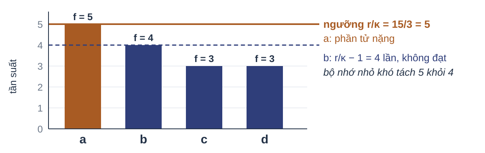
Lời giải chính xác giữ $d$ bộ đếm; bộ nhớ nhỏ khó tách $r/\kappa$ lần khỏi $r/\kappa-1$ lần.
Theo bài giảng CS514 của Đại học Massachusetts Amherst (UMass), bài 10, trang chiếu 9, bài toán gần với tần suất là tìm phần tử nặng (heavy hitters, còn gọi là frequent items): địa chỉ IP gửi rất nhiều yêu cầu trong một tấn công từ chối dịch vụ (denial of service, DoS), hay sản phẩm đang được tìm nhiều. Bài toán $\kappa$-phần tử nặng (trang chiếu 8) hỏi mọi phần tử xuất hiện ít nhất $r/\kappa$ lần; vì $\sum_uf_u=r$, có nhiều nhất $\kappa$ phần tử như vậy. Trên dòng mười lăm phần tử với $\kappa=3$, ngưỡng là 5 và chỉ $\mathrm a$ đạt. Trang chiếu 11 chỉ ra khó khăn chính: với bộ nhớ nhỏ, khó phân biệt phần tử xuất hiện $r/\kappa$ lần, phải có trong đáp số, với phần tử xuất hiện $r/\kappa-1$ lần, không được có; vì vậy bài toán được nới lỏng thành bài toán $(\varepsilon,\kappa)$-phần tử nặng. Lời giải chính xác tăng theo $d$.
Bài toán phần tử nặng Định nghĩa. Cho $\kappa\ge1$, $0<\varepsilon\le1$. Lời giải của bài toán $(\varepsilon,\kappa)$-phần tử nặng ($(\varepsilon,\kappa)$-frequent items problem) là tập $\mathcal F\subseteq\mathcal U$ sao cho
mọi $u$ có $f_u\ge r/\kappa$ thuộc $\mathcal F$; mọi $u\in\mathcal F$ có $f_u\ge(1-\varepsilon)r/\kappa$. Ví dụ. $\kappa=3$, $\varepsilon=1/4$: ngưỡng 5 và $3{,}75$; $\mathcal F$ phải chứa $\mathrm a$, được chứa $\mathrm b$, không chứa $\mathrm c,\mathrm d$.
Để giải bài toán, đủ có $\widehat f_u\ge f_u$ thừa ít hơn $\varepsilon r/\kappa$, cùng lúc với mọi $u$.
Định nghĩa 09.30, theo UMass trang chiếu 11; thuật ngữ tiếng Anh là $(\varepsilon,\kappa)$-frequent items problem. Phần tử có tần suất trong $[(1-\varepsilon)r/\kappa,\,r/\kappa)$ thuộc hay không thuộc $\mathcal F$ đều được; UMass gọi đây là bài toán có hứa hẹn (promise problem). Trên dòng mười lăm phần tử, $f_{\mathrm b}=4$ nằm trong $[3{,}75;5)$ nên tùy ý; $f_{\mathrm c}=f_{\mathrm d}=3<3{,}75$ nên bị loại. Dòng cuối là cách dùng ước lượng: lấy $\mathcal F$ là các phần tử có ước lượng ít nhất $r/\kappa$; phần tử nặng không bị bỏ sót vì ước lượng không thấp, phần tử quá nhẹ bị loại vì sai số nhỏ. Tham số $\kappa$ của UMass viết là $k$ trong nguồn.
Họ băm phổ dụng Định nghĩa. Họ $\mathcal H$ các hàm $\mathcal U\to\{0,\ldots,m-1\}$ là họ băm phổ dụng (universal hash family) nếu $\Pr_h[h(u)=h(u')]\le1/m$ với mọi $u\ne u'$.
Xác suất lấy theo phép rút $h$ đều từ $\mathcal H$.
Họ độc lập từng cặp ($\Pr[h(u)=a,\,h(u')=a']=1/m^2$) là họ phổ dụng: cộng $m$ giá trị $a=a'$.
Với $m\ge2$, họ chỉ gồm một hàm hằng làm mọi cặp trùng với xác suất 1, nên không phổ dụng.
Cận thừa của Count-Min cần hai công cụ: xác suất hai phần tử chung một ô, và cận cho một đại lượng không âm lớn hơn nhiều kỳ vọng của nó. Định nghĩa 09.31. Tính đều của từng giá trị băm không đủ: gán cùng một giá trị ngẫu nhiên đều cho mọi phần tử thỏa tính đều mà làm mọi cặp trùng. Họ độc lập từng cặp (pairwise independent) cho mỗi cặp giá trị xác suất $1/m^2$; cộng $m$ trường hợp $h(u)=h(u')=a$ được $1/m$. Cận Count-Min chỉ cần cận va chạm $\Pr[h(u)=h(u')]\le1/m$ (UMass, trang chiếu 14). BHK (§6.2.1, tr.184–185) có ví dụ họ $(\alpha w+\beta)\bmod P$ với $P$ nguyên tố; miền giá trị của họ này có $P\ge\lvert\mathcal U\rvert$ phần tử, nên không dùng trực tiếp cho bảng nhỏ.
Bất đẳng thức Markov Bổ đề. $Z\ge0$ nhận hữu hạn giá trị, $z>0$: $\Pr[Z\ge z]\le\mathbb E[Z]/z$.
Chứng minh. Bỏ các số hạng $\zeta<z$, không âm vì $Z\ge0$:
$$\mathbb E[Z]\ge\sum_{\zeta\ge z}\zeta\Pr[Z=\zeta]\ge z\Pr[Z\ge z].$$
Bỏ $Z\ge0$ thì sai: $Z=\pm10$ với xác suất $1/2$ mỗi giá trị có $\mathbb E[Z]=0$ nhưng $\Pr[Z\ge10]=1/2$.
Bổ đề 09.32 (BHK Định lý 2.1, tr.13), viết cho biến rời rạc; tổng lấy trên các giá trị $\zeta$ của $Z$. Đẳng thức $\mathbb E[Z]=\sum_\zeta\zeta\Pr[Z=\zeta]$ là định nghĩa kỳ vọng; bất đẳng thức thứ nhất bỏ các số hạng $\zeta<z$, không âm vì $Z\ge0$; bất đẳng thức thứ hai dùng $\zeta\ge z$; chia hai vế cho $z>0$. Cận chỉ có ích khi $z>\mathbb E[Z]$. Bổ đề chỉ cần $Z\ge0$, không cần độc lập hay phân phối cụ thể; nhiễu va chạm của Count-Min là một tổng tần suất, nên không âm và dùng được bổ đề này với $z=2r/m$.
Bộ đếm dùng chung và phép lấy cực tiểu Ô của $u$ chứa $f_u$ cộng tần suất các phần tử va chạm với $u$, nên không nhỏ hơn $f_u$.
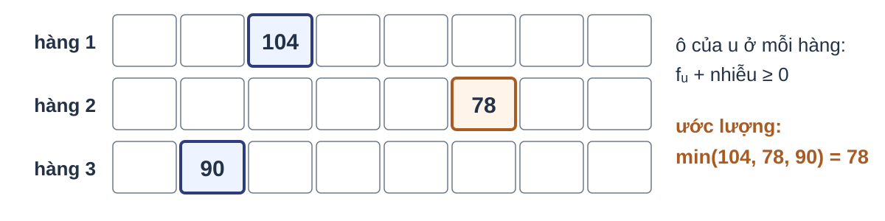
Định nghĩa. Count-Min Sketch gồm $t$ hàm băm $h_j:\mathcal U\to\{0,\ldots,m-1\}$ và $t$ mảng $m$ ô; $A_j[a]=\sum_{h_j(u)=a}f_u$, $\widehat f_u=\min_jA_j[h_j(u)]$.
Tương tự Bloom filter, nhưng bit thay bằng bộ đếm, phép “mọi bit bằng 1” thay bằng cực tiểu.
Ví dụ 09.11 (UMass, bài 10, trang chiếu 16) và Định nghĩa 09.33. Mỗi ô bằng $f_u$ cộng một lượng không âm, nên $f_u\le104$, $f_u\le78$, $f_u\le90$; cận chặt nhất là 78. Mỗi hàng là một bảng tần suất nén: tổng các ô của một hàng bằng $r$. Với nhiều mảng và hàm băm độc lập, ô nhỏ nhất là ô ít nhiễu nhất (UMass, trang chiếu 12–16). So với Bloom filter (Định nghĩa 08.22), Count-Min cũng dùng nhiều hàm băm và ô dùng chung; khác ở chỗ ô đếm số lần thay cho đánh dấu có hay không. Ô đánh số từ 0; $m$ là số ô mỗi hàng, $t$ là số hàng. Câu hỏi: vì sao không lấy trung bình ba ô? Lời giải: mọi ô đều là ước lượng thừa, nên trung bình không nhỏ hơn cực tiểu.
Ví dụ: bảng hai hàng ba ô, năm bước đầu Dòng mười lăm phần tử, $t=2$, $m=3$; mỗi phần tử tăng một ô ở mỗi hàng; tính hai mảng.
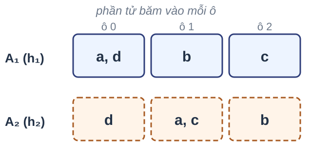
$r$ $x_r$ $A_1$ $A_2$ 1 $\mathrm a$ $[1,0,0]$ $[0,1,0]$ 2 $\mathrm b$ $[1,1,0]$ $[0,1,1]$ 3 $\mathrm c$ $[1,1,1]$ $[0,2,1]$ 4 $\mathrm b$ $[1,2,1]$ $[0,2,2]$ 5 $\mathrm d$ $[2,2,1]$ $[1,2,2]$
Ví dụ 09.12: $h_1$ đưa $\mathrm a,\mathrm b,\mathrm c,\mathrm d$ vào ô $0,1,2,0$; $h_2$ đưa chúng vào ô $1,2,1,0$. Ở $r=3$, $\mathrm c$ tăng $A_1[2]$ và $A_2[1]$; ô $A_2[1]$ lúc này đã chứa một lần của $\mathrm a$ nên lên 2. Ở $r=5$, $\mathrm d$ tăng $A_1[0]$, ô chung với $\mathrm a$, và $A_2[0]$, ô riêng của nó. Câu hỏi: sau năm bước, ước lượng của $\mathrm d$ bằng bao nhiêu? Lời giải: $\min(A_1[0],A_2[0])=\min(2,1)=1=f_{\mathrm d}$ trên tiền tố. Mỗi hàng có tổng bằng số phần tử đã đọc, ở đây là 5.
Ví dụ: bảng hai hàng ba ô, cuối dòng Tính: $A_1=[f_{\mathrm a}+f_{\mathrm d},f_{\mathrm b},f_{\mathrm c}]=[8,4,3]$, $A_2=[f_{\mathrm d},f_{\mathrm a}+f_{\mathrm c},f_{\mathrm b}]=[3,8,4]$.
Phần tử ô hàng 1 ô hàng 2 $\widehat f_u$ $f_u$ $\mathrm a$ 8 8 8 5 $\mathrm b$ 4 4 4 4 $\mathrm c$ 3 8 3 3 $\mathrm d$ 8 3 3 3
Diễn giải: $\mathrm a$ va chạm với $\mathrm d$ ở hàng 1 và với $\mathrm c$ ở hàng 2, nên thừa 3.
Ví dụ 09.12, phần cuối dòng. Theo định nghĩa, mỗi ô bằng tổng tần suất các phần tử băm vào nó: $A_1[0]=f_{\mathrm a}+f_{\mathrm d}=5+3$, $A_2[1]=f_{\mathrm a}+f_{\mathrm c}=5+3$. Kiểm tra lại: mỗi hàng có tổng $8+4+3=3+8+4=15=r$. $\mathrm c$ và $\mathrm d$ có một hàng không va chạm, và phép lấy cực tiểu chọn đúng hàng đó; $\mathrm a$ va chạm ở cả hai hàng, nên cực tiểu vẫn thừa 3. $\mathrm b$ không va chạm ở hàng nào. Ví dụ cho thấy hai điều cần chứng minh: ước lượng không bao giờ thấp hơn tần suất thật, và sai số nhỏ với xác suất cao khi có đủ ô và đủ hàng.
Thuật toán: cập nhật và truy vấn Count-Min Đầu vào: dòng; $m$, $t$; $h_1,\ldots,h_t$ chọn trước dòng; mỗi phần tử cộng 1 vào tần suất của nó.
Đầu ra: khi được hỏi về $u$, ước lượng $\widehat f_u$.
COUNT-MIN(x_1, x_2, …; m, t, h_1, …, h_t)
A_j[a] ← 0 với mọi j, a
với mỗi phần tử x đến:
với j = 1, …, t: A_j[h_j(x)] ← A_j[h_j(x)] + 1
truy vấn u: trả min_j A_j[h_j(u)]
Phép quyết định là cực tiểu khi truy vấn; phần tử có $f_u=0$ vẫn có thể nhận ước lượng dương.
Mỗi phần tử, mỗi truy vấn: $t$ phép băm; bộ nhớ $mt$ bộ đếm.
Thuật toán 09.34 (UMass, trang chiếu 12). Giả thiết mỗi phần tử làm tăng tần suất của nó thêm đúng 1; bộ đếm chỉ tăng, và cận dưới $\widehat f_u\ge f_u$ dùng đúng điều này. Mọi thông tin về dòng nằm trong $mt$ bộ đếm. Trường hợp biên: phần tử chưa từng xuất hiện có thể nhận ước lượng dương do va chạm. Dừng: mỗi phần tử và mỗi truy vấn được xử lý sau $t$ bước. Mỗi bộ đếm cần $\lceil\log_2(r+1)\rceil$ bit, cộng phần lưu $t$ hàm băm. Ví dụ bảng hai hàng ba ô là một lượt chạy với $t=2$, $m=3$. Điều còn để ngỏ: chọn $m$ và $t$ thế nào để sai số và xác suất thất bại đạt yêu cầu.
Tính đúng: Count-Min, ô không nhỏ hơn tần suất Bổ đề. Với mọi $j$, $a$: $A_j[a]=\sum_{u:\,h_j(u)=a}f_u$; do đó $A_j[h_j(u)]=f_u+Z_j$, $Z_j\ge0$, và $\widehat f_u\ge f_u$.
Khởi tạo $r=0$: mọi ô và mọi $f_u$ bằng 0. Duy trì $x_r$ tăng $f_{x_r}$ và đúng ô $h_j(x_r)$ ở mỗi hàng: hai vế tăng như nhau. Kết luận $Z_j$ là tổng tần suất các $u'\ne u$ cùng ô với $u$, nên không âm.
$\widehat f_u=\min_j(f_u+Z_j)=f_u+\min_jZ_j\ge f_u$ với mọi dòng, mọi hàm băm.
Bổ đề 09.35 và chứng minh: quy nạp theo $r$ cho đẳng thức ô, rồi tách số hạng của $u$ trong tổng, rồi lấy cực tiểu. Không cần giả thiết xác suất; kết luận chỉ dựa vào việc bộ đếm chỉ tăng, tức mỗi phần tử cộng 1 vào tần suất của nó. Nếu dòng cho phép xóa (tần suất giảm), $Z_j$ có thể âm và phép lấy cực tiểu không còn là cận trên. Nhiễu $Z_j=\sum_{u'\ne u,\ h_j(u')=h_j(u)}f_{u'}$ là phần cần chặn tiếp: trên ví dụ bảng hai hàng ba ô, $\mathrm a$ có $Z_1=f_{\mathrm d}=3$ và $Z_2=f_{\mathrm c}=3$. Sai số một phía là lý do Count-Min lấy cực tiểu, như Bloom filter không bao giờ loại một khóa đã chèn.
Nhiễu của một hàng Bổ đề. $h_j$ rút đều từ họ băm phổ dụng; $u$ cố định: $\mathbb E[Z_j]\le r/m$ và $\Pr[Z_j\ge2r/m]\le1/2$.
Chứng minh. Tuyến tính kỳ vọng và cận va chạm:
$$\mathbb E[Z_j]=\sum_{u'\ne u}f_{u'}\Pr[h_j(u')=h_j(u)]\le\frac1m\sum_{u'\ne u}f_{u'}\le\frac rm.$$
Markov với $z=2r/m$, vì $Z_j\ge0$: $\Pr[Z_j\ge2r/m]\le\frac{r/m}{2r/m}=\frac12$.
Ví dụ. Bảng hai hàng ba ô, hai hàm băm cố định: $Z_1=Z_2=3$ với $u=\mathrm a$.
Theo phép chọn hàm băm: $\mathbb E[Z_j]\le(r-f_{\mathrm a})/m=10/3\le r/m=5$; ngưỡng $2r/m=10$.
Bổ đề 09.36. Viết $Z_j=\sum_{u'\ne u}f_{u'}\mathbf 1[h_j(u')=h_j(u)]$; các tần suất cố định vì dòng cố định, chỉ $h_j$ ngẫu nhiên. Đẳng thức đầu dùng tuyến tính kỳ vọng và $\mathbb E[\mathbf 1[E]]=\Pr(E)$; bất đẳng thức tiếp dùng tính phổ dụng; cuối cùng $\sum_{u'\ne u}f_{u'}=r-f_u\le r$. Bổ đề cần $h_j$ ngẫu nhiên: với một hàm cố định, như ở ví dụ, nhiễu là một số cố định, tới $r-f_u$ khi mọi phần tử chung ô với $u$; cận kỳ vọng nói về phép chọn ngẫu nhiên hàm băm, và $(r-f_{\mathrm a})/m=10/3$ chặt hơn $r/m=5$ vì đã trừ tần suất của chính $\mathrm a$. Một hàng cho sai số không quá $2r/m$ với xác suất ít nhất $1/2$, chưa đủ để dùng; các hàng độc lập khuếch đại xác suất.
Bảo đảm của Count-Min Giả thiết: mỗi phần tử cộng 1; $m=\lceil2\kappa/\varepsilon\rceil$, $t=\lceil\log_2(1/\delta)\rceil$; $h_1,\ldots,h_t$ độc lập, mỗi hàm từ họ băm phổ dụng.
Định lý. Với mỗi $u$ cố định, $\widehat f_u\ge f_u$ chắc chắn, và
$$\Pr\Bigl[\widehat f_u\ge f_u+\frac{\varepsilon r}{\kappa}\Bigr]\le2^{-t}\le\delta.$$
Ý nghĩa: với $\delta=0{,}01$, trong 100 lần dựng bảng độc lập, ít nhất khoảng 99 lần $\widehat f_u$ thừa dưới $\varepsilon r/\kappa$.
Định lý 09.37; xác suất lấy theo phép chọn các hàm băm. Tính độc lập giữa các hàng là giả thiết riêng, không suy ra từ tính phổ dụng của từng hàm. Bảo đảm theo UMass, trang chiếu 17. Bảo đảm cho từng phần tử cố định. Sai số tính theo $r$, nên tăng khi dòng dài ra; với phần tử có $f_u$ nhỏ hơn nhiều $\varepsilon r/\kappa$, ước lượng có thể lớn hơn $f_u$ nhiều lần. Bộ nhớ $mt=O\bigl(\frac\kappa\varepsilon\log\frac1\delta\bigr)$ bộ đếm không phụ thuộc $d$ (UMass, trang chiếu 18). Câu hỏi: muốn sai số chỉ bằng một nửa, $m$ đổi thế nào? Lời giải: $\varepsilon$ giảm một nửa nên $m$ gấp đôi; $t$ không đổi.
Chứng minh: bảo đảm của Count-Min Bước 1: Theo bổ đề ô không nhỏ hơn tần suất, $\widehat f_u=f_u+\min_jZ_j\ge f_u$.
Bước 2: Thất bại khi mọi $Z_j\ge\varepsilon r/\kappa$; vì $m\ge2\kappa/\varepsilon$, $2r/m\le\varepsilon r/\kappa$, nên mọi $Z_j\ge2r/m$.
Bước 3: $Z_j$ chỉ phụ thuộc $h_j$; các hàng độc lập cho tích, như Định lý 06.7:
$$\begin{aligned}\Pr\Bigl[\widehat f_u\ge f_u+\frac{\varepsilon r}\kappa\Bigr]&\le\Pr\Bigl[\bigcap_{j=1}^{t}\{Z_j\ge\tfrac{2r}m\}\Bigr]\\&=\prod_{j=1}^{t}\Pr\bigl[Z_j\ge\tfrac{2r}m\bigr]\le2^{-t}\le\delta.\ \square\end{aligned}$$
Bốn quan hệ ở dòng cuối lần lượt dùng Bước 2, tính độc lập của các hàng, bổ đề nhiễu của một hàng và $2^t\ge2^{\log_2(1/\delta)}=1/\delta$. Định lý 06.7 của Bài 06 dùng cùng bước tích: một cặp bị bỏ sót khi mọi dải độc lập cùng không trùng. Phản ví dụ cho từng giả thiết: mọi hàng dùng một hàm hằng thì mọi phần tử va chạm ở mọi hàng, $Z_j=r-f_u$, và trên dòng mười lăm phần tử mọi ước lượng bằng 15; mọi hàng dùng cùng $h_1$ thì xác suất thất bại bằng của một hàng, không giảm theo $t$; $m=1$ cho mọi ô bằng $r$ và sai số $r-f_u$ chắc chắn. Bước 2 dùng điều kiện về $m$, Bước 3 dùng tính độc lập, bổ đề nhiễu dùng tính phổ dụng.
Chi phí: Count-Min Mô hình: mỗi phép băm, cộng, đọc, so sánh tốn $O(1)$; trường hợp xấu nhất.
Bước Số lần Chi phí mỗi lần Đóng góp khởi tạo $mt$ ô, một lần $O(1)$ $O(mt)$ cập nhật $t$ mỗi phần tử $O(1)$ $O(t)$ truy vấn $t$ mỗi truy vấn $O(1)$ $O(t)$
Chọn $\varepsilon=0{,}1$, $\kappa=100$, $\delta=0{,}01$: $m=2\,000$, $t=7$, tức $14\,000$ bộ đếm; sai số tới $0{,}001\,r$.
Với $r\le r_{\max}=10^9$, $t=37$ ($74\,000$ bộ đếm): xác suất $\ge1-\delta$, phần tử đã xuất hiện có $\widehat f_u\ge r/\kappa$ giải bài toán $(\varepsilon,\kappa)$.
Bảng chi phí của Thuật toán 09.34; số liệu của Bài tập 09.6. $m=\lceil200/0{,}1\rceil=2\,000$; $t=\lceil\log_2100\rceil=7$ vì $2^6=64<100\le128$. Hệ quả 09.38: chọn $t=\lceil\log_2(r_{\max}/\delta)\rceil$ thì mỗi phần tử thất bại với xác suất không quá $\delta/r$, và cận hợp trên $d\le r$ phần tử đã xuất hiện cho mọi phần tử cùng tốt với xác suất ít nhất $1-\delta$; khi đó tập phần tử có $\widehat f_u\ge r/\kappa$ giải bài toán $(\varepsilon,\kappa)$-phần tử nặng. $\log_210^{11}\approx36{,}54$ nên $t=37$. So sánh: bảng tần suất chính xác cho $10^6$ phần tử phân biệt cần $10^6$ bộ đếm cùng $10^6$ mã phần tử và tăng theo $d$; Count-Min không phụ thuộc $d$ nhưng có sai số tới $10^6$ khi $r=10^9$. Phạm vi: hệ quả không nói cách liệt kê các phần tử đã xuất hiện mà không lưu chúng.
Bài tập: hai hàng cùng một hàm băm Câu hỏi: (a) Trong ví dụ bảng hai hàng ba ô, hàng 2 dùng $h_1$ thay cho $h_2$.
Tính bốn ước lượng; nêu giả thiết của định lý bảo đảm bị bỏ.
(b) Giải thích vì sao Count-Min lấy cực tiểu các ô, còn Flajolet–Martin lấy trung vị.
Bài tập kiểm năng lực nhận ra vai trò của tính độc lập giữa các hàng và của sai số một phía. Gợi ý: viết lại hai mảng khi cả hai hàng dùng $h_1$. Lời giải (a): hai hàng giống hệt nhau, $A_1=A_2=[8,4,3]$, nên ước lượng là $8,4,3,8$ thay cho $8,4,3,3$; giả thiết bị bỏ là các hàng độc lập, và xác suất thất bại bằng xác suất của một hàng, không giảm theo $t$ (phản ví dụ của Định lý 09.37). Lời giải (b), Nhận xét 09.39: mọi ô của Count-Min là ước lượng thừa, nên ô nhỏ nhất gần $f_u$ nhất, còn trung bình hay trung vị không nhỏ hơn cực tiểu; ước lượng $2^R$ của Flajolet–Martin có sai số hai phía, nên cần trung vị. Cả Count-Min và Bloom filter dựa vào việc ô chỉ được tăng. Hướng dẫn chấm, 10 điểm: bốn ước lượng đúng (4 điểm), gọi đúng giả thiết (3 điểm), phân biệt sai số một phía và hai phía (3 điểm).
5. Cửa sổ trượt và cửa sổ suy giảm mũMuốn trả lời về phần gần đây của dòng, phải tóm tắt cửa sổ bằng thùng hoặc bằng trọng số giảm theo tuổi.
Cận dưới cho đáp số chính xác · Sáu quy tắc · Cận 50% · Gộp dây chuyền · Trọng số theo tuổi
Flajolet–Martin, AMS và Count-Min tính trên toàn dòng: phần tử nặng cách đây một năm vẫn nặng hôm nay. Cụm thứ nhất đếm bit 1 trong $k$ vị trí cuối bằng biểu diễn Datar–Gionis–Indyk–Motwani (DGIM): đáp số chính xác cần $N$ bit, còn DGIM dùng $O(\log^2N)$ bit với sai số tương đối không quá 50%. Cụm thứ hai thay biên cứng bằng trọng số giảm theo tuổi và theo dõi phần tử phổ biến gần đây. Mạch giao cho tổng kết năm phác thảo với ba loại bảo đảm.
Lượt truy cập trong cửa sổ gần đây Nhắc lại: các phác thảo trước tính trên toàn dòng: $f_{\mathrm a}=5$, còn 8 vị trí cuối có 3 lần $\mathrm a$.
Ký hiệu: $x_i\in\{0,1\}$ là bit ở vị trí $i$; $y_k$ là số bit 1 trong $k$ vị trí cuối.
Nhu cầu: số lượt truy cập một URL trong $k$ lượt cuối, với mọi $k\le N$, $N=10^9$.
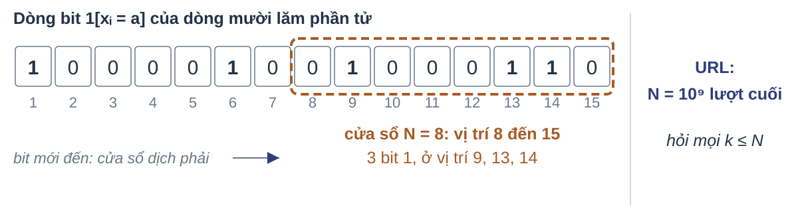
Lời giải chính xác giữ $N$ bit cuối: 125 MB cho mỗi URL.
Câu 4 của ví dụ năm câu hỏi thành câu hỏi trên dòng bit: thay mỗi $x_i$ bằng $\mathbf 1[x_i=\mathrm a]$, đếm bit 1 trong 8 bit cuối, bằng 3. MMDS (§4.6, tr.150) hỏi số bit 1 trong $k$ bit cuối với mọi $k\le N$. Quy mô URL với cửa sổ $N=10^9$ lượt, một dòng bit cho mỗi URL, lấy từ trang chiếu Stanford CS246 2017, Streams 1, tr.13: $10^9/8$ byte $=125$ MB. Từ đây $x_i\in\{0,1\}$ là bit ở vị trí $i$, $r$ là vị trí của bit mới nhất, cửa sổ là các vị trí $r-N+1,\ldots,r$, và $y_k$ là số bit 1 trong $k$ vị trí cuối $r-k+1,\ldots,r$. Khó khăn chính: đáp số chính xác cần chừng ấy bit cho mọi thuật toán tất định (Mệnh đề 09.41).
Cận dưới cho đếm chính xác trong cửa sổ Mệnh đề. Thuật toán dòng một lượt tất định giữ trạng thái ít hơn $N$ bit. Khi đó:
(a) có một dòng và một $k\le N$ mà thuật toán trả sai $y_k$; (b) kết luận vẫn đúng khi chỉ phải trả lời $k=N$. Giữ đủ $N$ bit cuối thì trả đúng mọi $k$; dưới $N$ bit, thuật toán tất định phải chấp nhận sai số.
Mệnh đề 09.41 (MMDS §4.6.1, tr.151). Giả thiết: phép trả lời chỉ đọc trạng thái; phép cập nhật là hàm của trạng thái và bit mới (Định nghĩa 08.1). Phần (b) mạnh hơn (a): ngay cả câu hỏi tổng số bit 1 trong cả cửa sổ cũng cần $N$ bit. Ý trực quan: nếu hai cửa sổ khác nhau cho cùng trạng thái, thuật toán không trả lời đúng cho cả hai ở mọi truy vấn; có $2^N$ cửa sổ, nên trạng thái phải có ít nhất $2^N$ giá trị. Lập luận cùng kiểu với cận cho đếm phần tử phân biệt ở mạch Flajolet–Martin. Từ mệnh đề này, mọi cách tiết kiệm bộ nhớ phải chấp nhận sai số.
Chứng minh: cận dưới cho đếm chính xác Bước 1: $2^N$ cửa sổ, ít hơn $2^N$ trạng thái: theo nguyên lý Dirichlet, có $\mathbf w\ne\mathbf w'$ cùng trạng thái.
Bước 2: $k$ là vị trí bit khác đầu tiên tính từ phải: $y_k(\mathbf w)$, $y_k(\mathbf w')$ hơn kém 1, cùng câu trả lời.
Ví dụ. $N=4$: $\mathbf w=1001$, $\mathbf w'=0101$ có $k=3$, $y_3$ là 1 và 2.
Bước 3: Đọc thêm cùng $N-k$ bit: bit thứ $k$ thành bit trái cùng; hai tổng hơn kém 1, cùng trạng thái. $\square$
Nguyên lý Dirichlet còn gọi là nguyên lý chuồng bồ câu (pigeonhole principle); Bước 1 xét các dòng gồm đúng $N$ bit, mỗi dòng là một cửa sổ. Bước 2: $k-1$ bit cuối trùng nhau, bit thứ $k$ khác nhau; thuật toán trả lời từ trạng thái nên cho cùng một số, và sai ở ít nhất một cửa sổ. Bước 3: phép cập nhật chỉ phụ thuộc trạng thái và bit mới, nên hai dòng vẫn cùng trạng thái sau mỗi bit; sau $N-k$ bit, các bit cũ hơn bit thứ $k$ đã ra khỏi cửa sổ và $N-1$ bit còn lại trùng nhau. Ví dụ là MMDS Ví dụ 4.10, tr.151; hai cửa sổ $1001$ và $0101$ có cùng số bit 1 là 2, nên chỉ truy vấn hậu tố phân biệt được chúng. Cặp $0101$ và $1010$ khác ngay ở bit cuối, cho $k=1$. Ví dụ cho Bước 3: thêm một bit 0 vào $1001$ và $0101$ được $0010$ và $1010$, chỉ khác ở bit trái cùng, tổng 1 và 2.
Ví dụ: sáu đoạn trên hai mươi lăm bit Chỉ giữ tổng của các đoạn dài $1,2,4,\ldots$ thì sai nhiều khi bit 1 dồn vào một đoạn dài.
DGIM chọn đoạn có số bit 1 là lũy thừa của 2, không giảm về quá khứ.
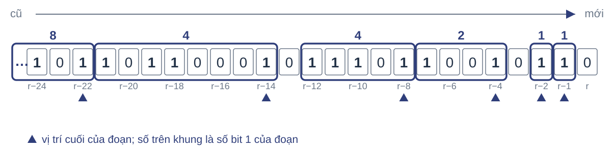
Tính: từ mới về cũ, các đoạn có $1,1,2,4,4,8$ bit 1; đoạn có 2 bit 1 phủ $r-7,\ldots,r-4$.
Ví dụ 09.14 (MMDS Hình 4.2, tr.152; Ví dụ 4.11, tr.153). Ý tưởng theo trang chiếu MMDS, Streams 1, tr.29–32: tóm tắt các đoạn có độ dài tăng theo lũy thừa của 2 sai nhiều khi các bit 1 dồn vào một đoạn dài mà chỉ biết tổng; DGIM cố định số bit 1 của mỗi đoạn và cho số đó không giảm về quá khứ. Các bit 1 thấy được nằm ở 14 vị trí; năm đoạn đầu chứa $1+1+2+4+4=12$ bit, đoạn có 8 bit 1 có 2 bit thấy được và 6 bit bên trái phần hình. Bit 0 ở $r$, $r-3$, $r-13$ nằm giữa hai đoạn. Câu hỏi: đoạn 4 bit 1 kết thúc ở $r-8$ phủ những vị trí nào? Lời giải: $r-12,\ldots,r-8$, năm vị trí, bốn bit 1.
Thùng của biểu diễn DGIM Định nghĩa. Thùng (bucket) $b$ là một đoạn vị trí liên tiếp kết thúc ở bit 1.
Mốc phải $\tau_b$ là vị trí cuối của đoạn; kích thước (còn gọi là cỡ) $\lvert b\rvert$ là số bit 1 trong đoạn.
Thùng được lưu bằng hai số: $\tau_b\bmod N$ và $\log_2\lvert b\rvert$.
Ví dụ. Trên hai mươi lăm bit, thùng $(4,r-8)$ phủ năm vị trí $r-12,\ldots,r-8$ nhưng có bốn bit 1.
Định nghĩa 09.42, phần thùng; định nghĩa thùng là đoạn liên tục kết thúc ở bit 1 theo trang chiếu Stanford CS246 2017, Streams 1, tr.16–17, và khớp MMDS §4.6.2, tr.152. Thùng có thể chứa bit 0 bên trong, và giữa hai thùng có thể có bit 0 không thuộc thùng nào. Kích thước đếm bit 1, không đếm vị trí: thùng $(4,r-8)$ ở ví dụ phủ năm vị trí, có một bit 0 ở $r-9$. Hai số được lưu: mốc phải theo modulo $N$, cần $\lceil\log_2N\rceil$ bit, và số mũ của kích thước. Thùng ở đây khác thùng băm của Bài 06, vốn là tập các khóa cùng giá trị băm (MMDS chú thích 5, tr.152). Ký hiệu thùng dạng (kích thước, mốc phải), như $(2,r-4)$.
Sáu quy tắc của biểu diễn DGIM Định nghĩa. Biểu diễn DGIM: các thùng có mốc phải trong cửa sổ, thỏa:
mốc phải là bit 1; mỗi bit 1 trong cửa sổ thuộc một thùng; không vị trí nào thuộc hai thùng; mỗi kích thước có một hoặc hai thùng, từ 1 tới lớn nhất; kích thước là lũy thừa của 2; về quá khứ, kích thước không giảm. Định nghĩa 09.42, sáu quy tắc theo MMDS §4.6.2, tr.152; trạng thái của Hình 4.2, với kích thước từ mới về cũ $1,1,2,4,4,8$, thỏa sáu quy tắc. Nhận xét 09.43: giữa hai thùng liền nhau theo thời gian không có bit 1; nếu có, bit đó nằm trong cửa sổ, thuộc một thùng theo quy tắc 2, và thùng đó nằm trọn giữa hai thùng đã cho. Do đó các thùng chia các bit 1 gần đây thành những nhóm liên tiếp, và chỉ thùng cũ nhất có thể vắt qua biên trái của cửa sổ. Hai biểu diễn không hợp lệ: ba thùng cỡ 1 (phá quy tắc 4); thùng cỡ 2 mới hơn một thùng cỡ 1 (phá quy tắc 6). Câu hỏi: quy tắc nào chặn số thùng? Lời giải: quy tắc 4 cùng quy tắc 5 (Mệnh đề 09.44).
Số thùng và bộ nhớ Mệnh đề. Kích thước lớn nhất $2^J$ có $J\le\lfloor\log_2N\rfloor$; có nhiều nhất $2(\lfloor\log_2N\rfloor+1)$ thùng.
Mỗi thùng $\lceil\log_2N\rceil+\lceil\log_2(\lfloor\log_2N\rfloor+1)\rceil$ bit; tổng $O(\log^2N)$ bit, cộng $\lceil\log_2N\rceil$ bit cho $r\bmod N$.
Ví dụ. $N=10^9$: nhiều nhất 60 thùng, mỗi thùng $30+5=35$ bit.
$2\,100+30=2\,130$ bit, khoảng 266 byte, so với 125 MB của lời giải chính xác.
Mệnh đề 09.44 (trang chiếu Stanford CS246 2017, Streams 1, tr.24). Chỉ dùng sáu quy tắc và điều kiện mốc phải trong cửa sổ. Với $N=10^9$: $\lfloor\log_2N\rfloor=29$, nên nhiều nhất $2\cdot30=60$ thùng; $\lceil\log_2N\rceil=30$ bit cho mốc, $\lceil\log_230\rceil=5$ bit cho số mũ. Mệnh đề đếm bit của trạng thái, không nói về thời gian xử lý. Bỏ quy tắc 4 thì số thùng không còn bị chặn: $N$ thùng cỡ 1 thỏa mọi quy tắc khác. Đếm bằng từ máy sẽ che thừa số $\log N$: $O(\log N)$ thùng, mỗi thùng $O(\log N)$ bit.
Chứng minh: số thùng và bộ nhớ Nhắc lại: $1+2+\cdots+2^{J-1}=2^J-1$ (tổng cấp số nhân).
Bước 1: $b$ cỡ $2^J$; theo quy tắc 4, 6, mỗi cỡ nhỏ hơn có thùng mới hơn $b$, trong cửa sổ.
Bước 2: Các thùng đó có ít nhất $2^J-1$ bit 1; thêm bit 1 ở $\tau_b$: $2^J\le N$.
Bước 3: Nhiều nhất $\lfloor\log_2N\rfloor+1$ kích thước, mỗi kích thước hai thùng.
Bước 4: Mốc theo modulo $N$ cùng $r\bmod N$ cho vị trí thật; số mũ $\le\lfloor\log_2N\rfloor$. $\square$
Bước 1: các thùng nhỏ hơn mới hơn $b$, nên mọi vị trí của chúng đứng sau $\tau_b$, mà $\tau_b$ nằm trong cửa sổ; vì vậy chúng nằm trọn trong cửa sổ. Bước 2 dùng quy tắc 1 và 3: $\tau_b$ là một bit 1 trong cửa sổ không thuộc các thùng nhỏ hơn; cửa sổ có ít nhất $2^J$ bit 1 mà chỉ có $N$ vị trí. Lập luận xử lý cả trường hợp thùng cũ nhất vắt qua biên trái, vì chỉ dùng mốc phải của nó. Bước 4: cửa sổ có đúng $N$ vị trí liên tiếp, nên mốc theo modulo $N$ không nhập nhằng; số mũ cần $\lceil\log_2(\lfloor\log_2N\rfloor+1)\rceil$ bit; nhân với số thùng được $O(\log N)\cdot O(\log N)=O(\log^2N)$.
Ví dụ: mười vị trí cuối trên hai mươi lăm bit 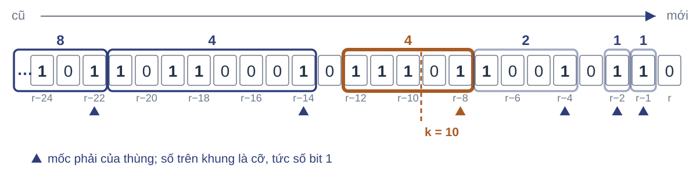
Tính $\widehat y_{10}$: thùng cũ nhất có mốc phải trong hậu tố là $b^*=(4,r-8)$.
Ba thùng mới hơn góp $T=1+1+2=4$; ước lượng $T+4/2=6$, thật 5.
Ví dụ 09.15 (MMDS Ví dụ 4.12, tr.153–154); thùng viết dạng (kích thước, mốc phải). Ý tưởng: mọi thùng mới hơn thùng chứa biên được cộng đủ, còn thùng chứa biên chỉ được đoán một nửa, vì biểu diễn không biết bao nhiêu bit 1 của nó nằm trong hậu tố. Thùng $(4,r-14)$ có mốc phải ngoài hậu tố nên không góp. Kiểm tra lại: mười bit cuối là $0110010110$, có 5 bit 1 ở $r-8$, $r-7$, $r-4$, $r-2$, $r-1$; ước lượng thừa 1, sai số tương đối $1/5$. Trong thùng $b^*$, chỉ bit ở mốc phải $r-8$ nằm trong hậu tố: đây là trường hợp ước lượng cao xấu nhất của cận 50%.
Thuật toán: truy vấn DGIM Đầu vào: biểu diễn DGIM của cửa sổ; $k$ với $1\le k\le N$.
Đầu ra: ước lượng $\widehat y_k$ của $y_k$.
TRUY-VẤN-DGIM(các thùng; r, k)
b* ← thùng cũ nhất có τ_b ≥ r − k + 1
nếu không có b*: trả 0
T ← tổng kích thước các thùng mới hơn b*
trả T + |b*| / 2
Phép quyết định là chọn $b^*$; với $k=N$, chỉ dùng mốc phải của thùng cũ nhất.
Một lượt qua nhiều nhất $2(\lfloor\log_2N\rfloor+1)$ thùng: $O(\log N)$ phép mỗi truy vấn.
Thuật toán 09.45. Giả thiết: biểu diễn thỏa sáu quy tắc. Mô hình chi phí: mỗi phép đọc và cộng tốn $O(1)$, trường hợp xấu nhất; số thùng lấy từ mệnh đề số thùng. Trường hợp biên $k=N$: thùng cũ nhất có thể vắt qua biên trái của cửa sổ, và thuật toán vẫn chỉ dùng mốc phải của nó. Nếu không thùng nào có mốc phải trong hậu tố, hậu tố không có bit 1 và thuật toán trả 0. Ký hiệu $\mu$ là số mũ với $\lvert b^*\rvert=2^\mu$; ví dụ mười vị trí cuối có $b^*=(4,r-8)$, $T=4$, $\mu=2$. Điều còn để ngỏ: ước lượng sai bao nhiêu.
Cận sai số 50% Định lý. Biểu diễn thỏa sáu quy tắc, $1\le k\le N$. Nếu $y_k=0$ thì $\widehat y_k=0$; nếu $y_k>0$ thì
$$\tfrac12\,y_k\le\widehat y_k\le\tfrac32\,y_k.$$
Ý nghĩa: với mọi $k\le N$, số lượt thật trong $k$ lượt cuối nằm giữa $2/3$ và 2 lần số DGIM trả.
Định lý 09.46; bảo đảm tất định, đúng với mọi dòng và mọi $k$, không cần hàm băm. Cận là sai số tương đối; sai số tuyệt đối có thể lớn khi $y_k$ lớn. Từ $\frac12y_k\le\widehat y_k\le\frac32y_k$ suy ra $\frac23\widehat y_k\le y_k\le2\widehat y_k$, đó là dòng ý nghĩa. So với cận dưới $N$ bit, định lý bỏ yêu cầu đáp số chính xác và đổi lại sai số 50%; bộ nhớ giảm từ $N$ bit xuống $O(\log^2N)$ bit. Khác với ngưỡng hai phía của Flajolet–Martin và bảo đảm Count-Min, bảo đảm này không phụ thuộc phép chọn hàm băm. Chứng minh theo trang chiếu Stanford CS246 2017, Streams 1, tr.23.
Chứng minh: cận sai số 50% Bước 1: Thùng mới hơn $b^*$ trọn trong hậu tố, thùng cũ hơn ở ngoài: $y_k=T+\pi$ với $1\le\pi\le2^\mu=\lvert b^*\rvert$.
Bước 2: Theo quy tắc 4, 6: $T\ge1+2+\cdots+2^{\mu-1}=2^\mu-1$, nên $y_k\ge2^\mu$.
Bước 3: sai số $\widehat y_k-y_k=2^{\mu-1}-\pi$, với $1\le\pi\le2^\mu$:
$$-2^{\mu-1}\le\widehat y_k-y_k\le2^{\mu-1}-1,\qquad \lvert\widehat y_k-y_k\rvert\le2^{\mu-1}\le\tfrac12y_k.$$
Bước 4: $y_k=0$: theo quy tắc 1, không thùng nào có mốc phải trong hậu tố, nên trả 0. $\square$
Bước 1 dùng quy tắc 1, 2, 3 và điều kiện mốc phải trong cửa sổ: hậu tố nằm trong cửa sổ vì $k\le N$, nên mọi bit 1 của nó thuộc một thùng; $\pi$ là số bit 1 của $b^*$ nằm trong hậu tố, ít nhất 1 vì mốc phải là bit 1. Bước 2 dùng quy tắc 4, 5, 6; số hạng "+1" là bit mốc phải của chính $b^*$. Hai trường hợp xấu nhất (MMDS §4.6.4, tr.154): $\pi=2^\mu$ cho ước lượng thấp nhất, $\pi=1$ cho ước lượng cao nhất. Ví dụ mười vị trí cuối: $T=4$, $\mu=2$, $\pi=1$, thừa $2^{\mu-1}-1=1$. Bước 4, chiều ngược: nếu $y_k>0$, bit 1 trong hậu tố thuộc một thùng có mốc phải ở sau nó, cũng trong hậu tố. Phản ví dụ khi bỏ quy tắc 4: một thùng cỡ 8 và một thùng cỡ 1 mới hơn; hậu tố chứa thùng cỡ 1 và đúng mốc phải của thùng cỡ 8 cho $y_k=2$ nhưng $\widehat y_k=5$, thừa 150%. Bỏ quy tắc 1: mốc phải là bit 0 cho $y_k=0$ mà $\widehat y_k=1$.
Ví dụ: một bit 1 mới trên hai mươi lăm bit Nhu cầu: giữ sáu quy tắc khi bit mới đến, để cận 50% còn đúng.
Bit 1 mới là thùng cỡ 1; ba thùng cùng cỡ thì gộp hai thùng cũ nhất, như phép nhớ.
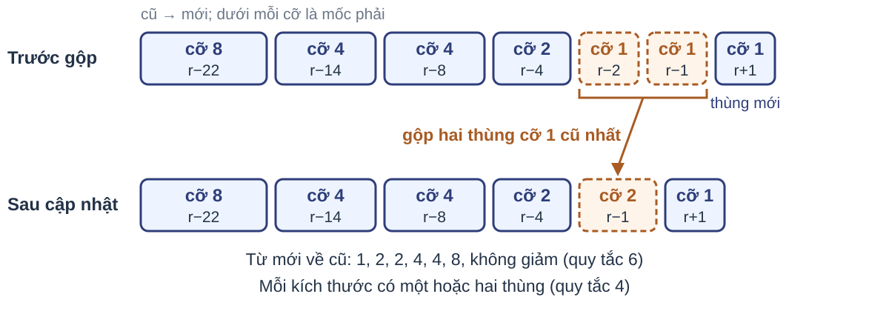
Tính: tạo $(1,r+1)$; gộp hai thùng cỡ 1 cũ nhất thành $(2,r-1)$; hai thùng cỡ 2 thì dừng.
Ví dụ 09.16 (MMDS Ví dụ 4.13, tr.155); thùng cũ nhất chưa ra khỏi cửa sổ. Ba bước: tạo $(1,r+1)$, khi đó có ba thùng cỡ 1 mốc $r-2$, $r-1$, $r+1$; gộp hai thùng cũ nhất thành $(2,r-1)$, mốc phải là mốc của thùng mới hơn trong hai; có hai thùng cỡ 2 mốc $r-4$ và $r-1$, quy tắc 4 thỏa, dừng. Trực giác phép nhớ: thêm 1 vào số nhị phân làm các bit 1 cuối lan sang trái; ở đây ba thùng cùng cỡ lan thành một thùng cỡ gấp đôi. Chỉ hai thùng cỡ 1 cũ nhất đổi; thùng cỡ 2 vừa tạo đứng giữa thùng cỡ 2 cũ và thùng cỡ 1 mới, nên kích thước vẫn không giảm về quá khứ. Trạng thái mới viết theo vị trí hiện tại $r'=r+1$: $(8,r'-23)$, $(4,r'-15)$, $(4,r'-9)$, $(2,r'-5)$, $(2,r'-2)$, $(1,r')$, đúng MMDS Hình 4.3. Kiểm tra lại: tổng kích thước các thùng ngoài thùng cỡ 8 tăng từ 12 lên 13.
Thuật toán: cập nhật DGIM Đầu vào: biểu diễn DGIM sau vị trí $r-1$; bit mới $x_r$. Đầu ra: biểu diễn sau vị trí $r$.
CẬP-NHẬT-DGIM(các thùng; r, x_r, N)
nếu thùng cũ nhất có τ ≤ r − N: xóa nó
nếu x_r = 0: dừng
thêm thùng (cỡ 1, mốc r); χ ← 0
trong khi có ba thùng cỡ 2^χ:
b', b'' ← hai thùng cỡ 2^χ cũ nhất (b' cũ hơn)
thay b', b'' bằng thùng (cỡ 2^(χ+1), mốc τ_b'')
χ ← χ + 1
Gộp hai thùng cũ nhất; gộp hai thùng mới nhất biến $2,2,2,1$ thành $2,4,1$, phá quy tắc 6.
Mỗi bit: nhiều nhất $\lfloor\log_2N\rfloor+1$ lượt gộp.
Thuật toán 09.47; MMDS (§4.6.5, tr.154) gộp hai thùng cũ nhất. Các kích thước $2,2,2,1$ viết từ cũ sang mới; sau khi gộp hai thùng cỡ 2 mới nhất, đi về quá khứ kích thước giảm từ 4 xuống 2. Trường hợp biên: chỉ thùng cũ nhất có thể hết hạn, và nhiều nhất một thùng mỗi bước, vì các mốc phải khác nhau và trước bước $r$ đều $\ge r-N$; dây chuyền gộp có thể lan tới kích thước lớn nhất. Dừng: mỗi lượt gộp làm giảm số thùng đi 1. Thùng gộp giữ mốc phải của thùng mới hơn, nên vẫn kết thúc ở một bit 1. Ví dụ một bit 1 mới là một lượt chạy với một lượt gộp.
Tính đúng: cập nhật DGIM, hết hạn và bit mới Định lý. Biểu diễn vào thỏa sáu quy tắc thì thuật toán dừng, biểu diễn ra cũng thỏa.
Bước 1: Chỉ thùng cũ nhất có thể có $\tau_b=r-N$; xóa nó giữ quy tắc 2 và 4.
Bước 2: Bit 0: các quy tắc giữ nguyên.
Bước 3: Bit 1: thùng $(1,r)$ mới nhất, nhỏ nhất; chỉ cỡ 1 có thể có ba thùng.
Định lý 09.48, Bước 1–3 của chứng minh; biểu diễn vào ứng với cửa sổ $r-N,\ldots,r-1$, biểu diễn ra với cửa sổ $r-N+1,\ldots,r$. Bước 1: mọi bit 1 của thùng hết hạn ở ngoài cửa sổ mới; mọi mốc phải trước bước $r$ đều $\ge r-N$ và khác nhau (quy tắc 1, 3), nên nhiều nhất một thùng có $\tau_b=r-N$, là thùng cũ nhất. Thùng cũ nhất có kích thước lớn nhất (quy tắc 6); nếu nó là thùng duy nhất cỡ đó, kích thước lớn nhất giảm một bậc và các kích thước nhỏ hơn vẫn có một hoặc hai thùng. Quy tắc 1, 3, 5, 6 không bị ảnh hưởng khi xóa một thùng. Bước 3: thùng $(1,r)$ thỏa quy tắc 1, 5, phủ bit 1 mới (quy tắc 2), không chung vị trí với thùng nào (quy tắc 3). Phản ví dụ khi bỏ bước hết hạn: sau $N$ bit 0, thùng cũ nhất còn mốc phải ngoài cửa sổ, và số thùng không còn bị chặn.
Tính đúng: cập nhật DGIM, vòng gộp Bất biến: $\mathcal I_\chi$: quy tắc 1–3, 5, 6 thỏa; cỡ dưới $2^\chi$ có 1–2 thùng, cỡ $2^\chi$ có 1–3 thùng;
các cỡ lớn hơn $2^\chi$ giữ số thùng như sau Bước 1.
Khởi tạo $\mathcal I_0$ đúng sau Bước 3. Duy trì Ba thùng cỡ $2^\chi$ liền nhau; đoạn từ $b'$ tới $\tau_{b''}$ có đúng $2^{\chi+1}$ bit 1. Kết thúc Cỡ $2^\chi$ còn 1–2 thùng: quy tắc 4 thỏa; số thùng giảm mỗi lượt nên dừng.
Bước 4–5 của chứng minh Định lý 09.48. Duy trì: theo quy tắc 6, giữa hai thùng cỡ $2^\chi$ không có thùng cỡ khác, nên ba thùng $b'$, $b''$, $b'''$ liền nhau theo thời gian. Thùng gộp là đoạn vị trí liên tục từ vị trí đầu của $b'$ tới $\tau_{b''}$, gồm cả các bit 0 nằm giữa; giữa hai thùng liền nhau không có bit 1 (Nhận xét 09.43), nên đoạn chứa đúng $2^{\chi+1}$ bit 1, với bit mới nhất ở $\tau_{b''}$. Thùng gộp thỏa quy tắc 1, 5 và giữ nguyên tập bit 1 được phủ (quy tắc 2, 3). Sau lượt gộp, cỡ $2^\chi$ còn một thùng và cỡ $2^{\chi+1}$ tăng từ 0, 1 hoặc 2 lên 1, 2 hoặc 3. Về quy tắc 6: thùng gộp mới hơn mọi thùng cỡ $\ge2^{\chi+1}$ và cũ hơn thùng thứ ba cùng các thùng nhỏ hơn. Kết thúc: các kích thước lớn hơn giữ số thùng như sau Bước 1. Định lý này là điều kiện để mệnh đề số thùng và cận 50% áp dụng sau mọi bước.
Chi phí: cập nhật DGIM Mô hình: thùng giữ trong danh sách theo thời gian; mỗi phép trên một thùng tốn $O(1)$.
Bước Số lần mỗi bit Chi phí mỗi lần Đóng góp hết hạn 1 $O(1)$ $O(1)$ tạo thùng tối đa 1 $O(1)$ $O(1)$ gộp tối đa $\lfloor\log_2N\rfloor+1$ $O(1)$ xấu nhất $O(\log N)$
Xấu nhất: mỗi mức $\chi\le\lfloor\log_2N\rfloor$ có nhiều nhất một lượt gộp.
Khấu hao, từ trạng thái rỗng: số thùng không âm, nên tổng số lượt gộp không vượt số bit 1.
Mệnh đề 09.49; MMDS (§4.6.5, tr.155) nêu cận $O(\log N)$ cho một bit. Phần xấu nhất: một lượt gộp ở mức $\chi$ cần ba thùng cỡ $2^\chi$, trong đó ít nhất hai thùng có từ trạng thái trước, mà mọi kích thước của trạng thái trước $\le2^{\lfloor\log_2N\rfloor}$. Phần khấu hao (amortized cost) tính từ trạng thái rỗng: số thùng bằng số bit 1 trừ số lượt gộp và số lần hết hạn; mỗi bit 1 tạo đúng một thùng, mỗi lượt gộp và mỗi lần hết hạn giảm số thùng đi 1. Đây là phương pháp thế năng (potential method) của CLRS 4e, Chương 16, với thế năng là số thùng: chi phí khấu hao của một bit 1 không quá 1 lượt gộp. Đọc thêm: MMDS §4.6.6–4.6.7 giảm sai số bằng cách cho mỗi kích thước nhiều thùng hơn và đếm tổng các số nguyên dương.
Bài tập: hai bit 1 liên tiếp Câu hỏi: các thùng (kích thước, mốc phải), từ cũ sang mới: $(4,r-9)$, $(2,r-6)$, $(2,r-3)$, $(1,r-1)$; không thùng nào hết hạn.
Bit 1 đến ở $r+1$ rồi $r+2$. Ghi trạng thái sau mỗi bit, các lượt gộp, và kiểm sáu quy tắc.
So số lượt gộp với số bit 1 mới bằng phép đếm số thùng.
Bài tập 09.7; kiểm năng lực chạy phép gộp dây chuyền và phép đếm số thùng. Gợi ý: sau bit thứ nhất có hai thùng cỡ 1; sau bit thứ hai, dây chuyền gộp đi qua hai mức. Lời giải: bit ở $r+1$ tạo $(1,r+1)$, hai thùng cỡ 1, không gộp. Bit ở $r+2$ tạo $(1,r+2)$; ba thùng cỡ 1 mốc $r-1$, $r+1$, $r+2$; gộp thành $(2,r+1)$; ba thùng cỡ 2 mốc $r-6$, $r-3$, $r+1$; gộp thành $(4,r-3)$; dừng. Trạng thái: $(4,r-9)$, $(4,r-3)$, $(2,r+1)$, $(1,r+2)$; từ mới về cũ $1,2,4,4$. Số lượt gộp bằng $2-(4-4)=2$, cả hai do bit thứ hai; phép đếm khấu hao không áp trực tiếp vì đoạn không bắt đầu từ trạng thái rỗng. Hướng dẫn chấm, 10 điểm: trạng thái sau mỗi bit (2 + 4 điểm), kiểm sáu quy tắc (2 điểm), phép đếm số thùng (2 điểm). Kiểm tra: tổng kích thước tăng từ 9 lên 11.
Phim phổ biến hiện thời Nhắc lại: DGIM đếm bit 1 trong cửa sổ có biên cứng; vị trí $r-N$ bị bỏ hẳn.
Nhu cầu: xác định phim phổ biến hiện thời trên dòng vé bán toàn thế giới.
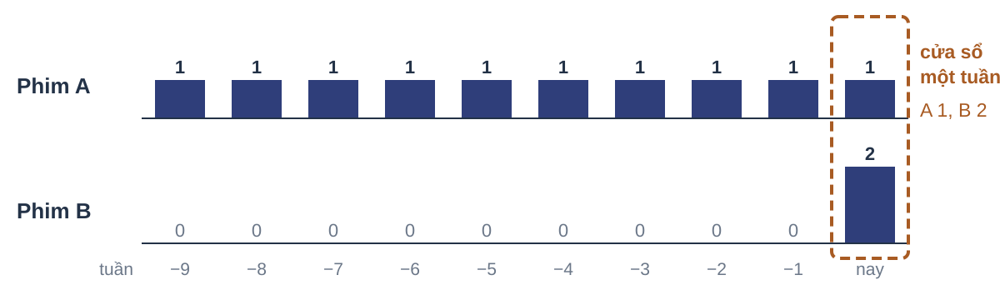
Sản phẩm Amazon, người dùng Twitter: quá nhiều phần tử để giữ một biểu diễn DGIM cho mỗi phần tử.
MMDS §4.7.1, tr.157–158: một phim bán đều đặn mỗi tuần trong mười tuần gần nhất có lẽ phổ biến hơn một phim bán gấp đôi số đó trong tuần trước mà không bán trước đó; cửa sổ một tuần lại xếp phim B trên. DGIM trả lời câu hỏi đếm cho một dòng bit; câu hỏi phổ biến cần một biểu diễn cho mỗi phần tử, và với sản phẩm của Amazon hay người dùng Twitter, số phần tử quá nhiều (tr.158). Khó khăn chính gồm ba ý: cần một đại lượng không có biên cứng, cập nhật bằng một phép tính, và chỉ giữ nó cho các phần tử đáng giữ. Cùng câu hỏi đặt cho các URL của một trang: mỗi URL là một phần tử, $c$ chọn theo độ dài lịch sử muốn theo dõi.
Ví dụ: mười tuần so với một tuần Mỗi tuần là một phần tử mang số vé; tuần tuổi $i$ có trọng số $0{,}9^i$, tức $c=0{,}1$; tính tổng của A, B.
$$\text{A: }1+0{,}9+\cdots+0{,}9^9=\frac{1-0{,}9^{10}}{0{,}1}\approx6{,}51,\qquad\text{B: }2.$$
Diễn giải: trọng số theo tuổi xếp A trên B; cửa sổ một tuần xếp B trên.
Ví dụ 09.17 (MMDS §4.7.1, tr.158). Phim A bán 1 đơn vị mỗi tuần trong 10 tuần gần nhất; phim B bán 2 đơn vị tuần gần nhất và không bán trước đó. Kiểm tra lại: $0{,}9^{10}\approx0{,}349$, nên $(1-0{,}349)/0{,}1\approx6{,}51$. Tổng của A là tổng cấp số nhân với công bội $0{,}9$; phim B chỉ có tuần tuổi 0, trọng số 1. Phần tử càng cũ càng nhẹ nhưng không bao giờ bị cắt hẳn.
Cửa sổ suy giảm mũ Định nghĩa. Với $x_i\ge0$ và hằng số suy giảm $c\in(0,1)$, cửa sổ suy giảm mũ (exponentially decaying window) là $D_r=\sum_{i=0}^{r-1}x_{r-i}(1-c)^i$, $D_0=0$.
Điểm phổ biến $D_r(u)$ là $D_r$ trên dòng chỉ báo $\mathbf 1[x_1=u],\mathbf 1[x_2=u],\ldots$
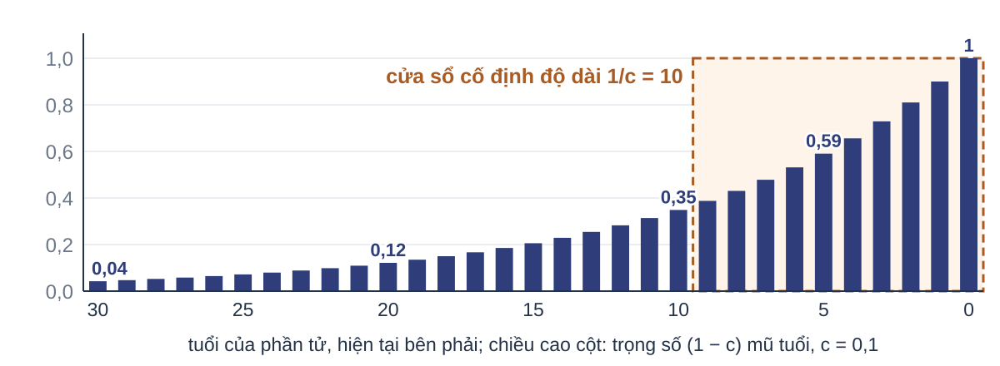
Định nghĩa 09.52; hằng số suy giảm (decay constant), cửa sổ suy giảm mũ (exponentially decaying window, gọi tắt là decaying window). Phần tử tuổi $i$, tức $x_{r-i}$, mang trọng số $(1-c)^i$. MMDS (§4.7.2, tr.158) dùng $c$ nhỏ, như $10^{-6}$ hay $10^{-9}$. Theo Nhận xét 09.54 (MMDS Hình 4.4), cửa sổ trượt độ dài $1/c$ cho trọng số 1 cho $1/c$ phần tử mới nhất và 0 cho phần còn lại; cửa sổ suy giảm trải tổng đó lên mọi tuổi, và phần tử tuổi $1/c$ còn trọng số $(1-c)^{1/c}\le e^{-1}\approx0{,}37$. Với $c=10^{-9}$, nó xấp xỉ cửa sổ $10^9$ phần tử gần nhất mà không cần biết phần tử nào rời đi. So với tần suất, $D_r(u)$ là tần suất có trọng số, và tiến tới $f_u$ khi $c\to0$.
Truy hồi và tổng trọng số Mệnh đề. Với $r\ge1$:
(a) $D_r=(1-c)\,D_{r-1}+x_r$; (b) $\sum_{i=0}^{r-1}(1-c)^i=\frac{1-(1-c)^r}{c}<\frac1c$; nếu mọi $x_i\in[0,1]$ thì $D_r<1/c$; (c) với dòng phần tử, $\sum_{u\in\mathcal U}D_r(u)=\frac{1-(1-c)^r}{c}$. Ví dụ. Dòng mưa mỗi ngày, $x_i=1$, $c=0{,}1$: $D_1=1$, $D_2=1{,}9$, $D_3=2{,}71$, tăng tới 10.
Mệnh đề 09.53; tất định, mọi $r$. Phần (a) là phép cập nhật của MMDS (tr.159): nhân tổng hiện tại với $1-c$ rồi cộng phần tử mới, một phép nhân và một phép cộng, không cần nhớ phần tử nào. Ví dụ dòng mưa theo trang chiếu Stanford CS246 2017, Streams 1, tr.28: theo (b), $D_r=10(1-0{,}9^r)$ tăng tới 10 mà không đạt. Phần (b) là cận cho dòng hữu hạn; $1/c$ là giới hạn khi $r\to\infty$. Phần (c) nói tổng điểm của mọi phần tử nhỏ hơn $1/c$, nên chỉ ít phần tử có điểm lớn.
Chứng minh: truy hồi và tổng trọng số Bước 1: Tách số hạng $i=0$, rút $1-c$ và đổi chỉ số $i-1$ thành $i$:
$$D_r=x_r+\sum_{i=1}^{r-1}x_{r-i}(1-c)^i=x_r+(1-c)\,D_{r-1}.$$
Bước 2: Nhắc lại: $1+z+\cdots+z^{r-1}=\frac{1-z^r}{1-z}$ với $z\ne1$; đặt $z=1-c$, và $(1-c)^r>0$.
Bước 3: Đổi thứ tự tổng: $\sum_uD_r(u)=\sum_{i=0}^{r-1}(1-c)^i\sum_u\mathbf 1[x_{r-i}=u]$; tổng trong bằng 1. $\square$
Bước 1 dùng định nghĩa với chỉ số dời; với $r=1$, tổng rỗng và $D_0=0$. Bước 2 dùng tổng cấp số nhân (BHK §12.3, tr.408) với công bội $1-c\ne1$, cho $\frac{1-(1-c)^r}{1-(1-c)}=\frac{1-(1-c)^r}{c}$, nhỏ hơn $1/c$ vì $(1-c)^r>0$; nếu $0\le x_i\le1$, mỗi số hạng của $D_r$ không vượt $(1-c)^i$. Bước 3: mỗi vị trí mang đúng một phần tử, nên $\sum_u\mathbf 1[x_{r-i}=u]=1$ và kết quả là tổng ở (b). Câu hỏi: vì sao bất đẳng thức ở (b) là ngặt? Lời giải: dòng hữu hạn nên $(1-c)^r>0$.
Ví dụ: điểm của bốn phần tử Phần tử Tuổi Tính $D_{15}(u)$, $c=1/2$ $f_u$ $\mathrm a$ 14, 9, 6, 2, 1 $12\,577/16\,384\approx0{,}768$ 5 $\mathrm b$ 13, 11, 5, 0 $8\,453/8\,192\approx1{,}032$ 4 $\mathrm c$ 12, 8, 3 $\approx0{,}129$ 3 $\mathrm d$ 10, 7, 4 $\approx0{,}071$ 3
Diễn giải: $\mathrm b$ đứng đầu dù $f_{\mathrm a}>f_{\mathrm b}$, vì $\mathrm b$ vừa xuất hiện ở vị trí cuối.
Dòng mười lăm phần tử; phần tử ở vị trí $i$ có tuổi $15-i$ và trọng số $2^{-(15-i)}$. Ví dụ 09.18: câu trả lời cho câu thứ năm của ví dụ năm câu hỏi với $c=1/2$. $D_{15}(\mathrm a)=2^{-1}+2^{-2}+2^{-6}+2^{-9}+2^{-14}$; $D_{15}(\mathrm b)=1+2^{-5}+2^{-11}+2^{-13}$; $D_{15}(\mathrm c)=2^{-3}+2^{-8}+2^{-12}$; $D_{15}(\mathrm d)=2^{-4}+2^{-7}+2^{-10}$. Kiểm tra lại: tổng bốn điểm bằng $32\,767/16\,384=2(1-2^{-15})<2=1/c$, đúng phần (c) của mệnh đề truy hồi. Với $c=1/2$, trọng số giảm một nửa sau mỗi phần tử mới. Giữ điểm cho mọi phần tử tốn $d$ số; thuật toán phần tử phổ biến chỉ giữ các điểm đạt một ngưỡng.
Ví dụ: vết chạy với hằng số suy giảm và ngưỡng một nửa, bước 1–5 Giữ $D_r(u)$ cho mọi $u$ tốn $d$ số; tổng mọi điểm nhỏ hơn $1/c$, nên chỉ giữ điểm đạt ngưỡng $\theta$.
$c=\theta=1/2$: nhân mọi điểm với $1/2$; cộng 1 hoặc tạo điểm 1; xóa điểm nhỏ hơn $1/2$; tính các điểm được giữ.
$r$ $x_r$ điểm được giữ sau bước $r$ bị xóa 1 $\mathrm a$ $\mathrm a:1$ — 2 $\mathrm b$ $\mathrm a:1/2$, $\mathrm b:1$ — 3 $\mathrm c$ $\mathrm b:1/2$, $\mathrm c:1$ $\mathrm a$ ($1/4$) 4 $\mathrm b$ $\mathrm b:5/4$, $\mathrm c:1/2$ — 5 $\mathrm d$ $\mathrm b:5/8$, $\mathrm d:1$ $\mathrm c$ ($1/4$)
Ví dụ 09.19, bước 1–5. Các phần tử có điểm nhỏ có thể quên mà chỉ mất phần điểm nhỏ; ngưỡng $\theta=1/2$ là ngưỡng của MMDS (§4.7.3, tr.159); $\widehat D_r(u)$ là điểm được duy trì của $u$ sau $r$ phần tử. Ba thao tác mỗi bước đặt tên theo thuật toán: nhân, cộng hoặc tạo, xóa. Bước 4: $\mathrm b:1/2\to1/4$ rồi cộng 1 được $5/4$; $\mathrm c:1\to1/2$, đúng bằng ngưỡng nên được giữ. Câu hỏi: dự đoán bước 6 với $x_6=\mathrm a$. Lời giải: $\mathrm b:5/8\to5/16<1/2$ bị xóa dù $\mathrm b$ đã xuất hiện hai lần; $\mathrm d:1/2$, $\mathrm a:1$.
Ví dụ: vết chạy với hằng số suy giảm và ngưỡng một nửa, bước 6–15 $r$ $x_r$ điểm được giữ sau bước $r$ bị xóa 6 $\mathrm a$ $\mathrm d:1/2$, $\mathrm a:1$ $\mathrm b$ ($5/16$) 7–13 $\mathrm c,\mathrm d,\mathrm a,\mathrm b,\mathrm d,\mathrm c,\mathrm a$ phần tử trước $1/2$, phần tử vừa đến 1 phần tử có điểm $1/4$ 14 $\mathrm a$ $\mathrm a:3/2$ $\mathrm c$ ($1/4$) 15 $\mathrm b$ $\mathrm a:3/4$, $\mathrm b:1$ —
Bước 7–13: phần tử vừa đến luôn khác hai phần tử trước, nên giữ đúng hai điểm.
Diễn giải: luôn giữ nhiều nhất hai điểm; cuối dòng $\mathrm b:1$, $\mathrm a:3/4$, so với điểm thật $1{,}032$ và $0{,}768$.
Ví dụ 09.19, bước 6–15. Kiểm tra lại: bước 14, $\mathrm c:1/2\to1/4$ bị xóa, $\mathrm a:1\to1/2+1=3/2$; bước 15, $\mathrm a:3/4$, $\mathrm b$ mới có điểm 1. Điểm được duy trì nhỏ hơn điểm thật vì phần dư mất khi điểm bị xóa rồi tạo lại: $\mathrm b$ mất phần $5/16$ ở bước 6. Thứ hạng theo điểm được duy trì ở đây trùng thứ hạng theo điểm thật, nhưng điều đó không được bảo đảm. Hai điểm ứng với $1/(c\theta)=4$: thuật toán giữ ít hơn cận này. Bước 7–13 kiểm được từng bước bằng bảng vị trí của ví dụ năm câu hỏi.
Thuật toán: phần tử phổ biến trong cửa sổ suy giảm Đầu vào: dòng phần tử của $\mathcal U$; $c\in(0,1)$; ngưỡng $\theta\in(0,1)$.
Đầu ra: các phần tử đang theo dõi và điểm được duy trì $\widehat D_r(u)$ của chúng.
PHỔ-BIẾN(x_1, x_2, …; c, θ)
tập điểm ← rỗng
với mỗi x_r đến:
nhân mọi điểm với 1 − c
nếu có điểm của x_r: cộng 1
ngược lại: tạo điểm 1 cho x_r
xóa mọi điểm nhỏ hơn θ
Phép quyết định là bước xóa; phần tử mới có điểm $1>\theta$, không bị xóa ở bước của nó.
Mỗi phần tử: một lượt qua các điểm đang giữ để nhân và xóa.
Thuật toán 09.55; MMDS (§4.7.3, tr.159) dùng $\theta=1/2$. Điểm được duy trì $\widehat D_r(u)$ là số mà thuật toán giữ cho $u$ sau $r$ phần tử; nó bằng điểm thật $D_r(u)$ chừng nào $u$ chưa từng bị xóa. Giả thiết: phép nhân và phép cộng số thực tính là $O(1)$. Dừng: mỗi phần tử được xử lý sau một lượt qua các điểm đang giữ. Ví dụ vết chạy là một lượt với $c=\theta=1/2$. Điều còn phải chặn: số điểm đang giữ, vì bước nhân chạm mọi điểm. Câu hỏi: vì sao đầu vào đòi $\theta<1$? Lời giải: phần tử mới có điểm 1; với $\theta=1$ nó bị xóa ở bước kế khi điểm thành $1-c<1$, trừ khi xuất hiện lại ngay.
Số điểm được duy trì Định lý. Thuật toán chạy với $c\in(0,1)$, $\theta>0$:
(a) mọi $u$ đang được theo dõi có $\widehat D_r(u)\le D_r(u)$; (b) sau mỗi bước, số phần tử được theo dõi nhỏ hơn $1/(c\theta)$; với $\theta=1/2$, nhỏ hơn $2/c$. Ý nghĩa: $c=10^{-9}$, ngưỡng $1/2$: ít hơn $2\cdot10^9$ điểm, bất kể số phần tử phân biệt.
Định lý 09.56; tất định. Số điểm cũng không vượt $d$, nên cận có tác dụng khi $d$ vượt xa $1/(c\theta)$. Định lý chặn số điểm; nó không khẳng định mọi phần tử có $D_r(u)\ge\theta$ đều được theo dõi, vì điểm được duy trì có thể nhỏ hơn điểm thật. Cận (b) đúng với mọi $\theta>0$; với $\theta>1$ thuật toán không theo dõi phần tử nào, với $\theta=1$ nó chỉ giữ phần tử vừa đến, trừ khi một phần tử lặp lại liên tiếp. Nhận xét về $d$ theo MMDS chú thích 6, tr.159. So với mệnh đề truy hồi, vốn giữ chính xác một tổng $D_r$, định lý đổi tính chính xác của từng điểm lấy bộ nhớ không phụ thuộc $d$. Phản ví dụ: bỏ bước nhân thì điểm thành tần suất, và trên dòng $r$ phần tử phân biệt thuật toán giữ $r$ điểm; bỏ bước xóa thì số điểm bằng $d$.
Chứng minh: số điểm được duy trì Bước 1: Quy nạp theo $r$: điểm cũ $\widehat D_r(u)=(1-c)\widehat D_{r-1}(u)+\mathbf 1[x_r=u]\le D_r(u)$; điểm mới $1\le D_r(u)$.
Bước 2: Theo Bước 1 và tổng điểm của mọi phần tử:
$$\sum_{u\text{ theo dõi}}\widehat D_r(u)\le\sum_{u\in\mathcal U}D_r(u)=\frac{1-(1-c)^r}{c}<\frac1c.$$
Bước 3: Sau bước xóa, mọi điểm $\ge\theta$: $\Lambda\theta\le\sum\widehat D_r(u)<1/c$, nên $\Lambda<1/(c\theta)$. $\square$
Bước 1 dùng giả thiết quy nạp và truy hồi $D_r(u)=(1-c)D_{r-1}(u)+\mathbf 1[x_r=u]$; điểm tạo ở bước $r$ có $u=x_r$ và $1\le(1-c)D_{r-1}(u)+1$ vì $D_{r-1}(u)\ge0$. Bước xóa chỉ bỏ điểm, không đổi các điểm còn lại. Bước 2: thêm các số hạng không âm của phần tử không được theo dõi, rồi dùng phần (c) của mệnh đề truy hồi; tổng chính xác cho dòng hữu hạn nhỏ hơn $1/c$, nên cận là bất đẳng thức ngặt. Bước 3 dùng bước xóa. Với $\theta=1$, phần tử mới có điểm 1, thành $1-c<1$ ở bước kế tiếp và bị xóa, trừ khi xuất hiện lại ngay.
Chi phí: phần tử phổ biến Mô hình: điểm giữ trong bảng băm; mỗi phép nhân, cộng, tra, xóa tốn $O(1)$; trường hợp xấu nhất.
Bước Số lần mỗi phần tử Chi phí mỗi lần Đóng góp nhân điểm $\Lambda$ $O(1)$ $O(\Lambda)$ cộng hoặc tạo điểm 1 $O(1)$ $O(1)$ xóa điểm nhỏ $\Lambda+1$ phép kiểm $O(1)$ $O(\Lambda)$
Với $\Lambda<1/(c\theta)$: $O(1/(c\theta))$ phép mỗi phần tử, bộ nhớ dưới $1/(c\theta)$ cặp (phần tử, điểm).
Bảng chi phí của Thuật toán 09.55; $\Lambda$ là số điểm đang giữ, chặn bởi định lý số điểm được duy trì. Nhận xét 09.57: bước nhân chạm mọi điểm, nên thời gian mỗi phần tử tỷ lệ với số điểm đang giữ; điểm được duy trì là cận dưới của điểm thật, nên thứ hạng có thể khác thứ hạng theo điểm thật. Với $c=10^{-9}$ và ngưỡng $1/2$, mỗi phần tử chạm tới dưới $2\cdot10^9$ điểm, nhưng không quá số phần tử phân biệt $d$. So với một tổng $D_r$ duy nhất, giữ chính xác bằng một số, danh sách phần tử phổ biến tốn bộ nhớ theo $1/(c\theta)$ và đổi lại không cần giữ $d$ điểm.
Bài tập: ngưỡng một phần tư Câu hỏi: thuật toán phần tử phổ biến chạy với ngưỡng $\theta=1/4$.
(a) Với $c=10^{-6}$, chặn số điểm được giữ.
(b) Với $c=1/2$, chạy năm bước đầu trên dòng $\mathrm a,\mathrm b,\mathrm c,\mathrm b,\mathrm d$.
Bài tập 09.8; kiểm năng lực áp cận số điểm và chạy thuật toán với ngưỡng khác. Gợi ý: (a) dùng phần (b) của định lý số điểm; (b) một điểm bị xóa khi nhỏ hơn $1/4$. Lời giải (a): ít hơn $1/(c\theta)=1/(10^{-6}\cdot1/4)=4\cdot10^6$ điểm. Lời giải (b): bước 1 $\mathrm a:1$; bước 2 $\mathrm a:1/2$, $\mathrm b:1$; bước 3 $\mathrm a:1/4$, $\mathrm b:1/2$, $\mathrm c:1$, điểm $1/4$ không nhỏ hơn $1/4$ nên giữ; bước 4 $\mathrm a:1/8$ bị xóa, $\mathrm b:5/4$, $\mathrm c:1/2$; bước 5 $\mathrm b:5/8$, $\mathrm c:1/4$, $\mathrm d:1$. Cận là 8; thuật toán giữ nhiều nhất 3 điểm. Kiểm tra: tổng điểm sau bước 5 là $15/8<2=1/c$. Hướng dẫn chấm, 10 điểm: cận (a) (3 điểm), năm bước (b) (6 điểm), so với cận (1 điểm). Nhầm lẫn thường gặp: xóa điểm bằng đúng ngưỡng.
7. Bài tập vận dụngMuốn vận dụng Flajolet–Martin, AMS, Count-Min và DGIM, phải chạy và kiểm giả thiết của chúng trên bài tập của giáo trình.
Đuôi băm · Biến AMS · Họ băm phổ dụng · Truy vấn DGIM · Gộp dây chuyền
Sáu bài sau chạy bằng tay các phác thảo của bảng tổng kết và kiểm giả thiết của chúng. Thứ tự theo mạch giảng: MMDS 4.4.1 chạy Flajolet–Martin với ba hàm băm; 4.5.1 tính số bất ngờ và mômen bậc ba; 4.5.3 tính giá trị các biến AMS; BHK 6.7 dựng họ băm đều mà không độc lập từng cặp; MMDS 4.6.1 truy vấn DGIM trên Hình 4.2; 4.6.3 cập nhật DGIM với ba bit 1 trên Hình 4.3. Lời giải đầy đủ ở Bài tập 09.11, 09.10, 09.12, 09.20, 09.15, 09.16.
Bài tập: đuôi băm của ba hàm băm Dòng số nguyên $3,1,4,1,5,9,2,6,5$; hàm băm $h(x)=\alpha x+\beta\bmod32$, kết quả coi như số nhị phân 5 bit.
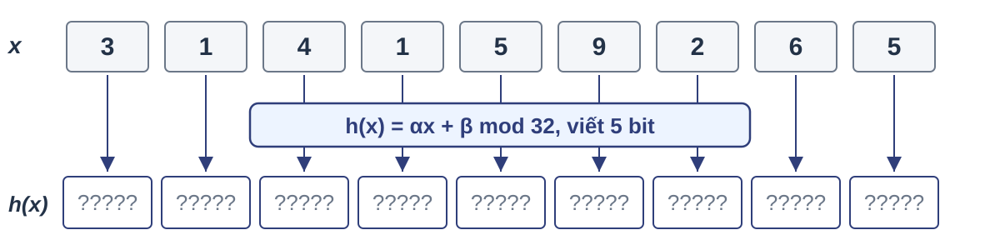
Câu hỏi: xác định độ dài đuôi của mỗi phần tử và ước lượng số phần tử phân biệt khi
(a) $h(x)=2x+1\bmod32$; (b) $h(x)=3x+7\bmod32$; (c) $h(x)=4x\bmod32$.
Nguồn: MMDS, Bài tập 4.4.1, §4.4.5, tr.145.
Bài tập 09.11; MMDS viết hàm băm dạng $ax+b\bmod2^k$; ở đây hệ số là $\alpha,\beta$ vì $a$ là chỉ số ô. Năng lực kiểm: tính giá trị băm 5 bit, đếm số bit 0 ở cuối, áp Flajolet–Martin với một hàm băm. Gợi ý: tính $h(x)$, viết 5 bit, đếm số bit 0 ở cuối; $R$ là số lớn nhất; ước lượng là $2^R$. Phần tử lặp lại cho cùng độ dài đuôi, nên chỉ cần tính cho bảy giá trị phân biệt. Trước khi tính, có thể dự đoán (a): $2x$ luôn chẵn nên $2x+1$ luôn lẻ.
Bài tập: đuôi băm của ba hàm băm Lời giải: (a) và (b), giá trị băm 5 bit và độ dài đuôi.
$x$ 3 1 4 1 5 9 2 6 5 $2x+1\bmod32$ $00111$ $00011$ $01001$ $00011$ $01011$ $10011$ $00101$ $01101$ $01011$ đuôi 0 0 0 0 0 0 0 0 0 $3x+7\bmod32$ $10000$ $01010$ $10011$ $01010$ $10110$ $00010$ $01101$ $11001$ $10110$ đuôi 4 1 0 1 1 1 0 0 1
(a) $R=0$, ước lượng $2^0=1$. (b) $R=4$, ước lượng $2^4=16$.
Lời giải theo Bài tập 09.11. (a): $2x+1$ luôn lẻ, nên bit cuối luôn là 1 và mọi đuôi bằng 0. (b): $3\cdot3+7=16=10000_2$, đuôi 4; $3\cdot9+7=34\equiv2=00010_2$, đuôi 1. Hướng dẫn chấm cho cả bài, 10 điểm: tính đúng chín giá trị băm mỗi câu, 1 điểm mỗi câu (3 điểm); đếm đúng độ dài đuôi, 1 điểm mỗi câu (3 điểm); $R$ và ước lượng đúng cho ba câu (2 điểm); so với 7 phần tử phân biệt và chỉ ra $h(9)=h(1)$ ở (c) (2 điểm). Lỗi thường gặp: quên lấy modulo 32, viết thiếu bit 0 đứng đầu, hoặc lấy tổng các độ dài đuôi thay cho số lớn nhất.
Bài tập: đuôi băm của ba hàm băm Lời giải: (c) $R=4$, ước lượng 16.
$x$ 3 1 4 1 5 9 2 6 5 $4x\bmod32$ $01100$ $00100$ $10000$ $00100$ $10100$ $00100$ $01000$ $11000$ $10100$ đuôi 2 2 4 2 2 2 3 3 2
Ba ước lượng 1, 16, 16; dòng có 7 phần tử phân biệt $\{1,2,3,4,5,6,9\}$.
Ở (c), $h(9)=36\bmod32=4=h(1)$: hàm không đơn ánh.
Lời giải theo Bài tập 09.11. Kiểm tra lại: $4\cdot4=16=10000_2$. Nhận xét: ở (c), $4x$ luôn chia hết cho 4 nên mọi đuôi ít nhất 2, ước lượng ít nhất 4 với mọi dòng; ở (a), mọi đuôi bằng 0, ước lượng luôn là 1. Cả hai vi phạm $\Pr[\rho\ge\ell]=2^{-\ell}$ của mô hình băm lý tưởng. Bài 4.4.2 của MMDS (Bài tập 09.17) hỏi tiếp lời khuyên khi chọn họ $\alpha x+\beta\bmod2^L$: chọn $\alpha$ lẻ và $2^L$ lớn hơn cỡ tập vũ trụ; với $\alpha$ cố định, hiệu $h(x)-h(x')=\alpha(x-x')\bmod2^L$ không phụ thuộc $\beta$, nên các giá trị băm không độc lập và mức sai phụ thuộc cấu trúc bit thấp của dữ liệu. Ba ước lượng trên ba hàm cho thấy vì sao phải gộp nhiều hàm băm độc lập.
Bài tập: số bất ngờ Dòng $3,1,4,1,3,4,2,1,2$.
Câu hỏi: tính số bất ngờ (mômen bậc hai) của dòng.
Mômen bậc ba của dòng này bằng bao nhiêu?
Nguồn: MMDS, Bài tập 4.5.1, §4.5.6, tr.149.
Bài tập 09.10. Năng lực kiểm: lập bảng tần suất và áp định nghĩa mômen bậc $p$. Gợi ý: đếm số lần xuất hiện của từng giá trị, rồi cộng bình phương và lập phương; kiểm tổng tần suất bằng độ dài dòng. Dòng này được dùng lại ở Bài 4.5.3 để kiểm tính không chệch của biến AMS, nên giá trị $F_2$ cần chính xác.
Bài tập: số bất ngờ Lời giải: lập bảng tần suất, rồi áp định nghĩa $F_p=\sum_uf_u^{\,p}$.
Giá trị 1 2 3 4 vị trí 2, 4, 8 7, 9 1, 5 3, 6 tần suất 3 2 2 2
$F_2=9+4+4+4=21$; $F_3=27+8+8+8=51$.
Kiểm tra: $3+2+2+2=9$, bằng độ dài dòng.
Lời giải theo Bài tập 09.10. Theo bài tập 4.5.2 của MMDS (Bài tập 09.18), với $r=9$, $d=4$ số bất ngờ nằm giữa $Q'(Q+1)^2+(d-Q')Q^2$ với $r=Qd+Q'$, tức $1\cdot9+3\cdot4=21$, và $(r-d+1)^2+(d-1)=36+3=39$; dòng này đạt giá trị nhỏ nhất, phân bố đều nhất có thể. Lỗi thường gặp: nhầm $F_2$ với $F_1^2=81$, hoặc đếm số giá trị phân biệt thay cho tần suất. Giá trị $F_2=21$ dùng để kiểm trung bình các biến AMS ở Bài 4.5.3. Hướng dẫn chấm, 10 điểm: bảng tần suất đúng (4 điểm), $F_2$ đúng (3 điểm), $F_3$ đúng (3 điểm).
Bài tập: giá trị các biến AMS Áp thuật toán AMS cho dòng $3,1,4,1,3,4,2,1,2$ của bài trước để ước lượng số bất ngờ.
Câu hỏi: (a) Xác định bộ đếm của biến bắt đầu ở mỗi vị trí $i$ khi dòng kết thúc.
(b) Tính ước lượng $9(2v_i-1)$ của từng biến và trung bình của chín ước lượng.
Nguồn: MMDS, Bài tập 4.5.3, §4.5.6, tr.150.
Bài tập 09.12; giá trị của biến là cặp (phần tử, bộ đếm); câu (a) hỏi bộ đếm. Năng lực kiểm: tính số lần xuất hiện ở hậu tố $v_i$ và áp tính không chệch. Gợi ý: biến bắt đầu ở $i$ có bộ đếm bằng $v_i$, số lần $x_i$ xuất hiện trong $x_i,\ldots,x_9$; lần xuất hiện cuối của một giá trị có $v_i=1$. Câu (b) kiểm trung bình với $F_2=21$.
Bài tập: giá trị các biến AMS Lời giải: (a) bộ đếm của biến bắt đầu ở $i$ là $v_i$; (b) hàng cuối.
$i$ 1 2 3 4 5 6 7 8 9 $x_i$ 3 1 4 1 3 4 2 1 2 $v_i$ 2 3 2 2 1 1 2 1 1 $9(2v_i-1)$ 27 45 27 27 9 9 27 9 9
(b) Tổng các ước lượng là 189, trung bình $189/9=21=F_2$.
Lời giải theo Bài tập 09.12. Ví dụ: vị trí 2 mang 1, và 1 xuất hiện ở 2, 4, 8, nên $v_2=3$; vị trí 1 mang 3, xuất hiện ở 1, 5, nên $v_1=2$. Trung bình trên mọi vị trí là kỳ vọng khi $I$ đều, nên bằng đúng $F_2$ theo định lý không chệch; một biến riêng lẻ cho từ 9 tới 45. Bài 4.5.4 của MMDS (Bài tập 09.13) dùng cùng các giá trị với phép trả lời $r(3v^2-3v+1)$: các ước lượng $63,171,63,63,9,9,63,9,9$, trung bình 51, đúng bằng $F_3$. Lỗi thường gặp: dùng tần suất $f_{x_i}$ thay cho $v_i$, cho trung bình $2F_2-F_1=33$. Hướng dẫn chấm, 10 điểm: chín giá trị $v_i$ đúng (6 điểm), chín ước lượng đúng (2 điểm), trung bình bằng $F_2$ và nêu định lý đã dùng (2 điểm).
Bài tập: họ băm đều nhưng không độc lập từng cặp Tập vũ trụ $\mathcal U$ có ít nhất hai phần tử; $m\ge2$ là số nguyên (BHK viết $M$).
Câu hỏi: dựng một họ $\mathcal H$ các hàm $\mathcal U\to\{0,\ldots,m-1\}$ thỏa hai điều kiện sau.
(i) Với mọi $x\in\mathcal U$ và $h$ rút đều từ $\mathcal H$, $h(x)$ đều trên $\{0,\ldots,m-1\}$.
(ii) $\mathcal H$ không độc lập từng cặp.
Nguồn: BHK, Bài tập 6.7, §6.6, tr.204.
Bài tập 09.20; BHK gọi tính đều của từng giá trị là 1-universal và tính độc lập từng cặp là 2-universal. Năng lực kiểm: phân biệt tính đều của từng giá trị băm với tính độc lập từng cặp và với cận va chạm của họ băm phổ dụng (Định nghĩa 09.31), giả thiết mà bổ đề nhiễu của một hàng trong Count-Min cần. Gợi ý: tính đều chỉ ràng buộc từng giá trị $h(x)$ riêng lẻ; tìm một họ làm $h(x)$ và $h(y)$ phụ thuộc nhau. Câu hỏi dẫn: họ nào làm mọi cặp phần tử luôn cùng giá trị băm?
Bài tập: họ băm đều nhưng không độc lập từng cặp Lời giải: lấy $\mathcal H=\{h_0,\ldots,h_{m-1}\}$ với $h_k(x)=k$ cho mọi $x\in\mathcal U$.
Tính đều: $h(x)=w$ khi và chỉ khi $h=h_w$, nên $\Pr[h(x)=w]=1/m$.
Không độc lập từng cặp: với $x\ne y$, $\Pr[h(x)=w,\,h(y)=z]$ bằng $1/m$ khi $w=z$, bằng 0 khi $w\ne z$; cả hai khác $1/m^2$ vì $m\ge2$.
Họ cũng không phổ dụng: $\Pr[h(x)=h(y)]=1>1/m$.
Kiểm tra, $m=3$: cặp $(h(x),h(y))$ nhận $(0,0)$, $(1,1)$, $(2,2)$, mỗi cặp với xác suất $1/3$, thay cho $1/9$ cho mỗi cặp trong 9 cặp.
Lời giải theo Bài tập 09.20. Họ này là phản ví dụ khi bỏ giả thiết họ băm phổ dụng của Count-Min (sau Định lý 09.37): mỗi hàng rút một hàm hằng, nên mọi phần tử chung ô với $u$ ở mọi hàng, $Z_j=r-f_u$, và trên dòng mười lăm phần tử mọi ước lượng bằng 15. Lỗi thường gặp: chỉ kiểm $\Pr[h(x)=w]=1/m$ rồi kết luận họ phổ dụng; tính đều không ràng buộc phân phối đồng thời của $h(x)$ và $h(y)$. Hướng dẫn chấm, 10 điểm: xây đúng họ (3 điểm), chứng minh tính đều (3 điểm), chỉ ra một cặp $(w,z)$ có xác suất khác $1/m^2$ (3 điểm), nhận xét họ không phổ dụng (1 điểm).
Bài tập: hai truy vấn trên hai mươi lăm bit Hai mươi lăm bit của phần giảng: thùng $(1,r-1)$, $(1,r-2)$, $(2,r-4)$, $(4,r-8)$, $(4,r-14)$, $(8,r-22)$.
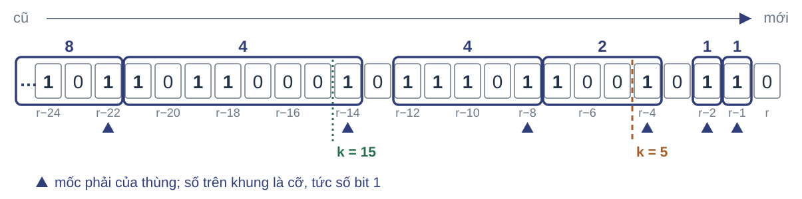
Câu hỏi: ước lượng số bit 1 trong $k$ vị trí cuối với (a) $k=5$, (b) $k=15$.
Mỗi ước lượng lệch bao nhiêu so với giá trị đúng?
Nguồn: MMDS, Bài tập 4.6.1, §4.6.8, tr.157.
Bài tập 09.15, trên MMDS Hình 4.2; danh sách thùng và chuỗi 25 bit đọc từ Hình 4.2. Năng lực kiểm: chạy thuật toán truy vấn DGIM và kiểm cận 50%. Gợi ý: tìm $b^*$, thùng cũ nhất có mốc phải $\ge r-k+1$; cộng kích thước các thùng mới hơn và một nửa kích thước của $b^*$; đếm bit 1 thật trên chuỗi 25 bit. Câu hỏi dẫn: với $k=15$, bit nào của thùng $(4,r-14)$ nằm trong hậu tố?
Bài tập: hai truy vấn trên hai mươi lăm bit Lời giải: chọn $b^*$, cộng $T$ và một nửa $\lvert b^*\rvert$, rồi đếm trên chuỗi bit.
$k$ $k$ vị trí cuối $b^*$ $T$ $\widehat y_k$ $y_k$ sai lệch 5 $10110$ $(2,r-4)$ $1+1=2$ 3 3 0 15 $101110110010110$ $(4,r-14)$ $1+1+2+4=8$ 10 9 thừa 1, 11%
Diễn giải: ở (b), chỉ mốc phải của $b^*$ nằm trong hậu tố; cả hai trong cận 50%.
Lời giải theo Bài tập 09.15. (a) Các vị trí $r-4,\ldots,r$ là $10110$, có 3 bit 1; thùng $(2,r-4)$ có mốc phải đúng ở biên, các thùng $(1,r-2)$, $(1,r-1)$ mới hơn; $\widehat y_5=2+2/2=3$. (b) Các vị trí $r-14,\ldots,r$ có 9 bit 1 ở $r-14$, $r-12$, $r-11$, $r-10$, $r-8$, $r-7$, $r-4$, $r-2$, $r-1$; $\widehat y_{15}=8+4/2=10$, sai số tương đối $1/9\approx11\%$. Theo chứng minh cận 50%, (b) ứng với $\pi=1$: sai số $2^{\mu-1}-1=1$ với $\mu=2$. Lỗi thường gặp: chọn $b^*=(8,r-22)$ cho $k=15$, hoặc cộng đủ kích thước của $b^*$. Hướng dẫn chấm, 10 điểm: mỗi câu, chọn đúng $b^*$ (1 điểm), $T$ đúng (1 điểm), ước lượng đúng (1 điểm), giá trị thật đúng (1 điểm); kiểm cận 50% và nhận ra trường hợp chỉ mốc phải nằm trong hậu tố (2 điểm).
Bài tập: ba bit 1 nữa sau một bit 1 mới 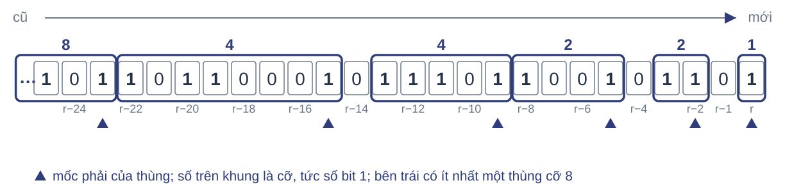
Câu hỏi: ba bit 1 nữa đi vào cửa sổ; không bit 1 nào trong hình rời cửa sổ.
(a) $(8,r-23)$ là thùng cũ nhất, cỡ 8 duy nhất: mô tả các thùng.
(b) Trước $(8,r-23)$ còn một thùng cỡ 8 chưa hết hạn: mô tả các thùng.
Nguồn: MMDS, Bài tập 4.6.3, §4.6.8, tr.157.
Bài tập 09.16, trên MMDS Hình 4.3, tức các thùng (kích thước, mốc phải) từ cũ sang mới $(8,r-23)$, $(4,r-15)$, $(4,r-9)$, $(2,r-5)$, $(2,r-2)$, $(1,r)$; trạng thái của Hình 4.3 là kết quả của ví dụ một bit 1 mới trên Hình 4.2, viết theo vị trí hiện tại $r$ của Hình 4.3. Năng lực kiểm: chạy thuật toán cập nhật DGIM ba lần, theo dõi dây chuyền gộp, nhận ra nhánh (b) của nhãn "có ít nhất một thùng cỡ 8". Gợi ý: giả sử ba bit 1 đến ở $r+1$, $r+2$, $r+3$; nếu xen bit 0, chỉ các mốc đổi. Ở mỗi bit, tạo thùng cỡ 1 rồi gộp hai thùng cũ nhất khi một kích thước có ba thùng.
Bài tập: ba bit 1 nữa sau một bit 1 mới Lời giải: (a) hai bit đầu, ở $r+1$ và $r+2$.
Bit Thao tác Kích thước, cũ sang mới $r+1$ tạo $(1,r+1)$; hai thùng cỡ 1, không gộp $8,4,4,2,2,1,1$ $r+2$ tạo $(1,r+2)$; gộp $(1,r)$, $(1,r+1)$ thành $(2,r+1)$ $8,4,4,2,2,2,1$ gộp $(2,r-5)$, $(2,r-2)$ thành $(4,r-2)$ $8,4,4,4,2,1$ gộp $(4,r-15)$, $(4,r-9)$ thành $(8,r-9)$ $8,8,4,2,1$
Sau bit $r+2$ có hai thùng cỡ 8, mốc $r-23$ và $r-9$; dây chuyền dừng.
Lời giải theo Bài tập 09.16, bước 1–2. Ở bit $r+2$, mỗi lượt gộp tạo một thùng ở mức kế tiếp và làm mức đó có ba thùng: ba thùng cỡ 1 (mốc $r$, $r+1$, $r+2$), rồi ba thùng cỡ 2 (mốc $r-5$, $r-2$, $r+1$), rồi ba thùng cỡ 4 (mốc $r-15$, $r-9$, $r-2$). Mỗi lượt gộp hai thùng cũ nhất và giữ mốc phải của thùng mới hơn trong hai. Đây là dây chuyền ba lượt, như phép nhớ lan qua ba bit khi cộng 1 vào một số nhị phân. Lỗi thường gặp: gộp hai thùng mới nhất, chẳng hạn gộp $(2,r-2)$ với $(2,r+1)$, làm kích thước đi về quá khứ giảm và phá quy tắc 6. Hướng dẫn chấm, 10 điểm: bit $r+1$ đúng (2 điểm), dây chuyền ba mức ở bit $r+2$ đúng mốc (4 điểm), bit $r+3$ và trạng thái cuối (2 điểm), câu (b) và kiểm tổng (2 điểm).
Bài tập: ba bit 1 nữa sau một bit 1 mới Lời giải: (a) bit $r+3$ tạo $(1,r+3)$; có hai thùng cỡ 1, không gộp.
Trạng thái cuối: $(8,r-23)$, $(8,r-9)$, $(4,r-2)$, $(2,r+1)$, $(1,r+2)$, $(1,r+3)$.
(b) Ở bit $r+2$ có ba thùng cỡ 8; hai thùng cũ nhất gộp thành $(16,r-23)$, rồi xét tiếp cỡ 16.
Kiểm tra (a), ngoài thùng cỡ 8 cũ: $13+3=16=8+4+2+1+1$.
Lời giải theo Bài tập 09.16, câu (a) bước 3 và câu (b). Nhãn của Hình 4.3 ghi "có ít nhất một thùng cỡ 8": phần bên trái không vẽ có thể chứa thêm một thùng cỡ 8; khi đó ở bước $r+2$, hai thùng cỡ 8 cũ nhất được gộp thành một thùng cỡ 16, và dây chuyền có thể lan tiếp tới các kích thước lớn hơn; phần nhìn thấy của trạng thái cuối là $(16,r-23)$, $(8,r-9)$, $(4,r-2)$, $(2,r+1)$, $(1,r+2)$, $(1,r+3)$. Kiểm sáu quy tắc trên trạng thái cuối: từ mới về cũ $1,1,2,4,8,8$, không giảm; mỗi kích thước có một hoặc hai thùng; các mốc phải đều là bit 1. Theo phép đếm số thùng, ba bit 1 mới cộng ba thùng, ba lượt gộp bớt ba, nên số thùng giữ nguyên là 6.